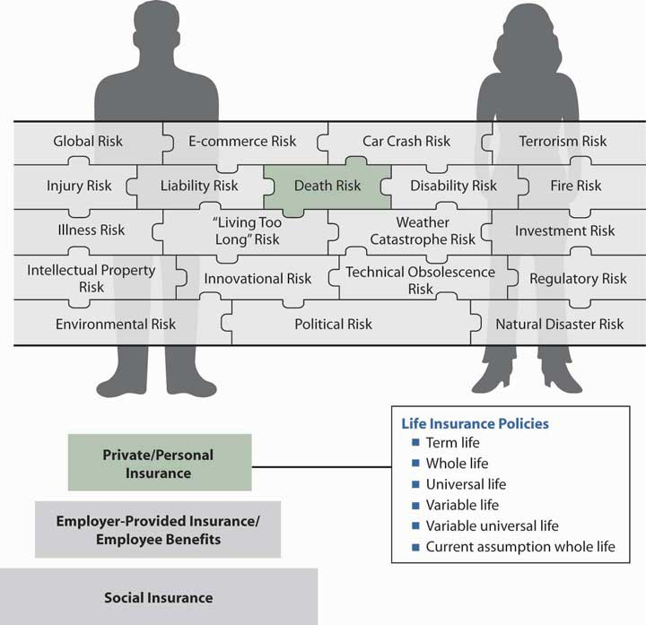
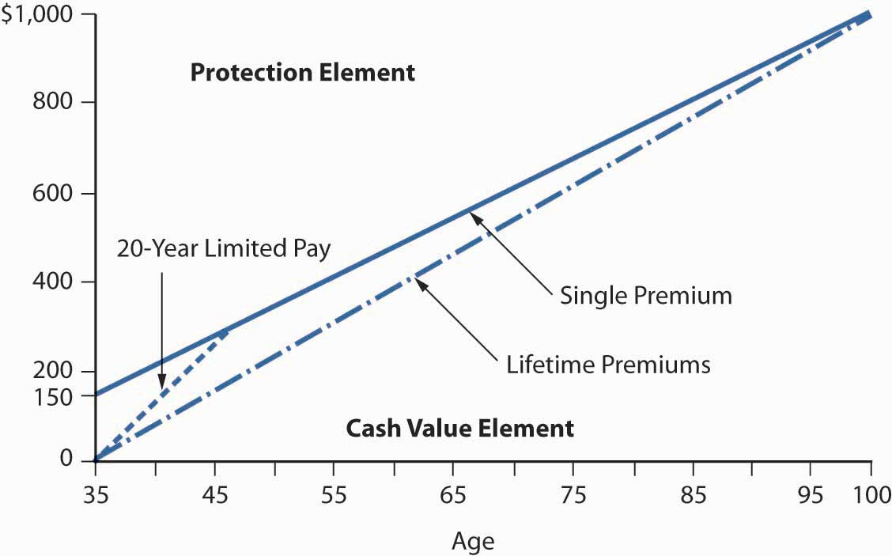
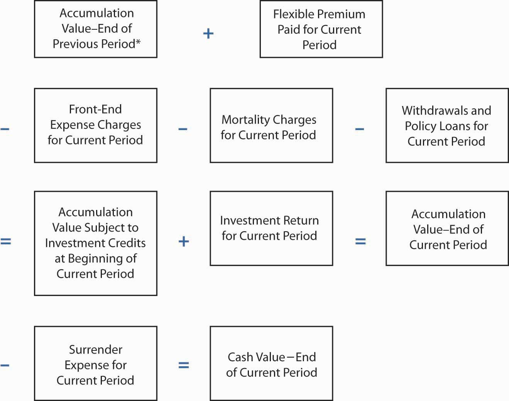
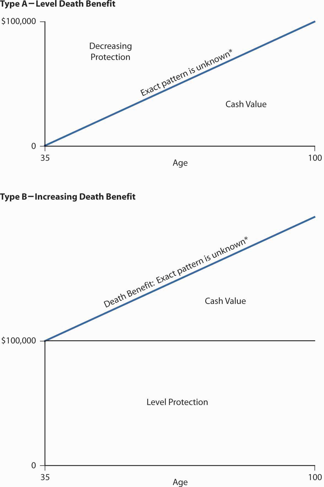
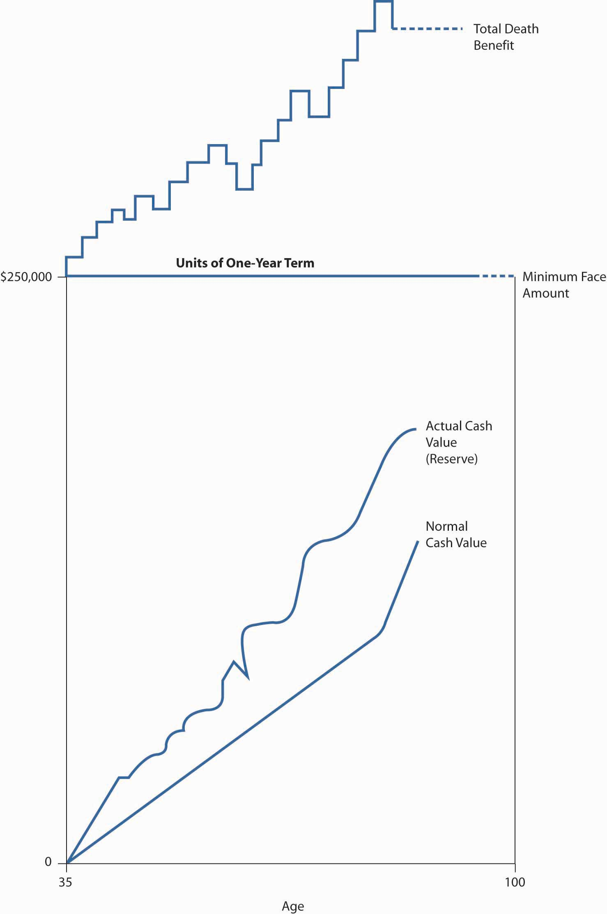

Following Social Security as a foundation to managing the life cycle risks of old age, sickness, accidents, and death, we begin our expedition into the products that help in solving these risks. In this chapter we delve into the life insurance products and the life insurance industry as one separate from the property/casualty insurance industry. As you saw in Chapter 7 "Insurance Operations", the accumulation of a reserve and the pricing of life insurance and annuities are based on mortality tables and life expectancy tables. The health insurance products use morbidity tables and loss data for calculating health and disability rates. In this chapter we will learn about the different life insurance products available—term life, whole life, universal life, variable life, and universal variable life products. The way these products fit into the risk management portfolio of the Smith family is featured in Case 1 of Chapter 23 "Cases in Holistic Risk Management". This chapter concentrates on the life products themselves.
While mortality rates keep improving (as we discussed in Chapter 17 "Life Cycle Financial Risks"), extreme health catastrophes can reverse the trend for brief periods. At various points in human history, mortality rates worsened as extreme health catastrophes occurred. For example, the mortality rate changed dramatically in 1918 when millions of people died from the flu pandemic. The potential for an avian flu pandemic in 2006 led to estimated life insurance claims of up to $133 billion under the most extreme scenario. The young and the elderly are those affected most by the flu. Because these age cohorts usually have less life insurance coverage, the general mortality impact may be even greater than the life claims estimates.Insurance Information Institute (III), “Moderate Avian Flu Pandemic Similar to 1957 and 1968 Outbreaks Could Cost U.S. Life Insurers $31 Billion in Additional Claims,” Press Release, January 17, 2006, http://www.iii.org/media/updates/press.748721/ (accessed April 10, 2009).
Life insurance can be thought of as a contract providing a hedge against an untimely death. When purchasing life insurance, the policyowner buys a contract for the future delivery of dollars. This also provides liquidity. The death, whenever it occurs, will create , such as funeral costs and debt payment, and estate taxes if the estate is large enough, that must be paid immediately. Most people, no matter how wealthy, will not have this much cash on hand. Life insurance provides the necessary liquidity because its payment is triggered by death. Smart decisions about life insurance require understanding both the nature of life insurance and the different types of products available. In this chapter we cover the most widely used products.
The topics covered in this chapter include the following:
For our holistic risk management, we need to look at all sources of coverages available. Understanding each type of coverage will complete our ability to manage our risk. In this chapter we delve into the various types of life insurance coverage that are available in the market. Some focus on covering the risk of mortality alone, while others also offer a savings element along with covering the risk of dying. This means that at any point in time, there is a cash value to the policy. This savings element is critical to the choices we make among policies such as whole life, universal life, or universal variable life policies. Our savings with insurance companies, via life products or annuities, makes this industry one of the largest financial intermediaries globally. As explained in Chapter 7 "Insurance Operations", the investment part of the operation of an insurer is as important as the underwriting part. Investments allow insurance companies to postprofits even when underwriting at a loss. In the life/health industry, investments are crucial to both financial performance and solvency. (Read how the industry is affected by poor investment returns in the box “The Life/Health Industry in the Economic Recession of 2008–2009” which appears later in this chapter.)
Figure 19.1 The Links between Holistic Risk Puzzle Pieces and Life Insurance Policies
In this chapter, we drill down into the life insurance policies, but this is just a piece of the products puzzle that helps us complete the bigger picture of our risks. All of the steps of the three-step structure in Figure 19.1 "The Links between Holistic Risk Puzzle Pieces and Life Insurance Policies" include some elements of death benefits coverage. In this chapter we delve into the top step for the different types of individual life coverage. Figure 19.1 "The Links between Holistic Risk Puzzle Pieces and Life Insurance Policies" provides us with the connection between the life policies of this chapter and the holistic risk picture.
In this section we elaborate on the manner in which life insurance products are able to pay the promised benefit:
Life insurance, like other forms of insurance, is based on three concepts: pooling many exposures into a group, accumulating a fund through contributions (premiums) from the members of the group, and paying from this fund for the losses of those who die each year. That is, life insurance involves the group sharing of individual losses. The individual transfers the risk of dying to the pool by paying the premiums. To set premium rates, the insurer must be able to calculate the probability of death at various ages among its insureds, based on pooling. The simplest illustration of pooling is one-year term life insurance. If an insurer promises to pay $100,000 at the death of each insured who dies during the year, it must collect enough money to pay the claims. If past experience indicates that 0.1 percent of a group of young people will die during the year, one death may be expected for every 1,000 persons in the group. If a group of 300,000 is insured, 300 claims (300,000 × .001) are expected. Because each contract is for $100,000, the total expected amount of death claims is $30 million (300 claims × $100,000). To collect enough premiums to cover mortality costs (the cost of claims), the insurer must collect $100 per policyowner ($30 million in claims / 300,000 policyowners).
In addition to covering mortality costs, a life insurance premium must reflect several adjustments. First, the premium is reduced to recognize that the insurer expects to earn investment income on premiums paid in advance. In this manner, most of an insurer’s investment income benefits consumers. Second, the premium is increased to cover the insurer’s marketing and administrative expenses. Taxes levied on the insurer must also be recovered. In calculating premiums, an actuary usually increases the premium to cover the insurer’s risk and expected profits. Risk charges cover any deviations above the predicted level of losses and expenses. The major premium elementsAdjustments made in life insurance rates for items such as investment income, marketing/administrative costs, taxes, and actuarial risks. for term life insurance and the actual prediction of deaths and the estimation of other premium elements are complicated actuarial processes (see Chapter 7 "Insurance Operations").
The mortality curve discussed in Chapter 7 "Insurance Operations" and Chapter 17 "Life Cycle Financial Risks" also shows why life insurance for a term of one year costs relatively little for young people. The probability that a death benefit payment will be made during that year is very low. The mortality curve also indicates why the cost of yearly renewable term life insuranceTerm life insurance purchased on a year-by-year basis., purchased on a year-by-year basis, becomes prohibitive for most people’s budgets beyond the middle years. The theory of insurance is that the losses of the few can be paid for by relatively small contributions from the many. If, however, a large percentage of those in the group suffer losses (say, because all members of the group are old), the burden on one’s budget becomes too great, substantial adverse selection is experienced, and the insurance mechanism fails.
The mortality curve shows that yearly renewable term life insurance, where premiums increase each year as mortality increases, becomes prohibitively expensive at advanced ages. For example, the mortality table shows a mortality rate of 0.06419 for a male age seventy-five. Thus, just the mortality element of the annual premium for a $100,000 yearly renewable term life insurance policy would be $6,419 (0.06419 × $100,000). At age ninety, ignoring other premium elements and adverse selection, the mortality cost would be $22,177 (0.22177 × −$100,000). From a budget perspective, this high cost, coupled with adverse selection, can leave the insurer with a group of insureds whose mortality is even higher than would be anticipated in the absence of adverse selection. Healthy people tend to drop the insurance, while unhealthy people try to pay premiums because they think their beneficiaries may soon have a claim. This behavior is built into renewal rates on term insurance, resulting in renewal rates that rise substantially above rates for new term insurance for healthy people of the same age. A system of spreading the cost for life insurance protection, over a long period or for the entire life span, without a rise in premiums, is essential for most individuals. This is the function of level-premium life insurance.
A level premiumIn life insurance, a premium that remains constant throughout the premium-paying period instead of rising from year to year. remains constant throughout the premium-paying period, instead of rising from year to year. Mathematically, the level premium is the amount of the constant periodic payment over a specified period (ending before the specified date in the event of death); it is equivalent to a hypothetical single premium that could be paid at the beginning of the contract, discounting for interest and mortality. The hypothetical single premium at the beginning can be thought of as similar to a mortgage that is paid for by periodic level premiums.
As Figure 19.2 "Yearly Renewable Term Premium and Level Premium for Ordinary Life (Issued at Age Twenty-Five)" shows, the level premium for an ordinary (whole) life policy (which provides lifetime protection) is issued at age twenty-five in the illustration and is greater during the early years than are the premiums for a yearly renewable term policy for the same period. The excess (see the shaded area between age twenty-five and a little before age fifty in Figure 19.2 "Yearly Renewable Term Premium and Level Premium for Ordinary Life (Issued at Age Twenty-Five)") and its investment earnings are available to help pay claims as they occur. This accumulation of funds, combined with a decreasing amount of true insurance protection (which is the net amount at risk to the insurance mechanism), makes possible a premium that remains level even though the probability of death rises as the insured grows older. In later years, the true cost of insurance protection (the probability of death at a particular age times the decreased amount of protection) is paid for by the level premium plus a portion of the investment earnings produced by the policy’s cash value. In summary, the level premium is higher than necessary to pay claims and other expenses during the early years of the contract, but less than the cost of protection equal to the total death benefit during the later years. The concept of a level premium is basic to an understanding of financing death benefits at advanced ages.
The accumulation of funds is a mathematical side effect of leveling the premium to accommodate consumers’ budgets. Beginning in the 1950s, however, insurers began to refer to the accumulated funds of level premium life insurance policies as cash valueAccumulated funds of level premium life insurance policies as that can be utilized to meet various savings needs. that could meet various savings needs. Today, the payment of premiums greater than the amount required to pay for a yearly renewable term policy often is motivated, at least in the minds of consumers, by the objective of creating savings or investment funds.
Figure 19.2 Yearly Renewable Term Premium and Level Premium for Ordinary Life (Issued at Age Twenty-Five)

Based on nonsmoker rates for a $50,000 policy with a selected company.
From an economic standpoint, the level premium plan does two things. First, the insurer offers an installment payment plan with equal payments over time. Second, the level premium policies are made up of two elements: protection and investment.
As discussed, although the periodic premium payments exceed death benefits and other expenses for an insured group during the early years of the policy, they fall short during later years (see Figure 19.2 "Yearly Renewable Term Premium and Level Premium for Ordinary Life (Issued at Age Twenty-Five)"); consequently, the insurer accumulates a reserveIn life insurance, funds accumulated to offset the deficiency of periodic premium payments falling short of providing promised death benefits in later years of a policy. to offset this deficiency. The insurer’s reserve is similar in amount, but not identical, to the sum of cash values for the insured group. The reserve is a liability on the insurer’s balance sheet, representing the insurer’s obligation and reflecting the extent to which future premiums and the insurer’s assumed investment income will not be sufficient to cover the present value of future claims on a policy. At any point, the present value of the reserve fund, future investment earnings, and future premiums are sufficient to pay the present value of all future death claims for a group of insureds. When an insured dies, the insurer is obligated to pay the beneficiary the face amount (death benefit) of the policy. Part of this payment is an amount equal to the reserve.
The difference between the reserve at any point in time and the face amount of the policy is known as the net amount at riskFor the insurer, the difference between the funding reserve at any point in time and the face amount of the policy. for the insurer and as the protection elementFor the insured, the difference between the funding reserve at any point in time and the face amount of the policy. for the insured. As Figure 19.2 "Yearly Renewable Term Premium and Level Premium for Ordinary Life (Issued at Age Twenty-Five)" illustrates, this element declines each year because the reserve (investment or cash value) increases. The protection/net-amount-at-risk element is analogous to decreasing term insurance. All level premium life policies have a combination of cash value and protection.
The amount at risk for the insurer (that is, the protection element) decreases as the cash value element increases with age; thus, less true insurance (protection) is purchased each year. This decreasing amount of insurance is one of the reasons why the annual cost of pure insurance (that is, the protection element) to the insurer is less than the sum of the level premium plus investment earnings, even at advanced ages when mortality rates significantly exceed the premium per $1,000 of death benefit. Over time, the growing amount of investment earnings (due to increasing cash value) more than offsets the inadequacy of the level premium. The periodic addition of part of these investment earnings to cash value explains why the cash value in the policy continues to grow throughout the life of the contract (see Figure 19.3 "Proportion of Protection and Cash Value in Ordinary Life Contract (Issued to a Male Age Twenty-Five)").
Figure 19.3 Proportion of Protection and Cash Value in Ordinary Life Contract (Issued to a Male Age Twenty-Five)

This graph shows the cash value (investment) figures for a selected ordinary life policy. The insurer’s reserve would be slightly higher than the cash value in the early contract years.
From an insurer’s perspective, the reserve is a liability that will have to be paid when the insured either dies or surrenders the policy. The separation of a whole life policy into protection and investment elements is an economic or personal finance concept rather than an actuarial one. Actuaries deal with large groups of insureds rather than individual policies; they look at an individual policy as an indivisible contract.
The cash value is classified as an asset on the policyholder’s personal balance sheet because it is the policy owner’s money. There are three ways to realize the cash value:
In this section you studied mechanisms that allow for the provision of life insurance:
In this section we elaborate on the following:
The life insurance industry is one of the largest industries in the world. Premiums for life, health, and annuity grew by 5.7 percent from $583.6 billion in 2006 to $616.7 billion in 2007 in the United States.Insurance Information Institute (III), The Insurance Fact Book, 2009, 19. This section concentrates on the life products sold to individuals. A comprehensive summary of these products is available in Table 19.1 "Characteristics of Major Types of Life Insurance Policies". The trend is toward lower life insurance rates for all types of life insurance products. Improvements in mortality rates have accounted for lower expected rates. This improvement was also highlighted in Chapter 17 "Life Cycle Financial Risks". The life/health industry’s condition deteriorated during the economic recession beginning in December 2007. These problems are detailed in the box “The Life/Health Industry in the Economic Recession of 2008–2009.”
Unlike property/casualty carriers, the prosperity of life insurance companies is closely linked to the health of the broader financial network. Investments make up a significant portion of industry profits, and they are the driving component behind product delivery. Because of the economic recession, life annuities promising minimum payments (discussed extensively in Chapter 21 "Employment-Based and Individual Longevity Risk Management") are particularly strained; in many cases, their guarantees are no longer supported by underlying investments. Those underlying investments consist of stocks, commercial mortgages, mortgage-backed securities (or MBSs, which were covered in the box “Problem Investments and the Credit Crisis” in Chapter 7 "Insurance Operations"), and corporate bonds. Market devaluation, default, or interest rate reductions have harmed all of these funding sources. Consider that the asset mix of life insurers in 2007 included $387.5 billion worth of MBSs; by way of comparison, the property and casualty insurance industry held $125.8 billion.
Recall from Chapter 5 "The Evolution of Risk Management: Enterprise Risk Management" and Chapter 7 "Insurance Operations" that insurers’ net worth is expressed in the form of capital and surplus (assets minus liabilities). Insurers must have capital that is sufficient to satisfy their liabilities (mainly in the form of loss reserves). In 2008, surplus declined by 4.7 percent for the top one hundred life insurers. This drop was mitigated somewhat, however, by successfully raising new capital in 2008. Nonetheless, investors will be none too pleased with the return on equity ratio of −0.3 percent, down from 12.8 percent in 2007. With little bargaining power, the industry may be able to raise new capital in the future only at less-than-favorable terms. Conning Research and Consulting estimates that surplus for the entire industry could be off by as much as 24 percent in 2008. Low interest rates and investments that are not simply depressed, but highly volatile, are cited as the reasons for the industry’s shrinking assets and surplus.
Twelve life insurers, including MetLife, Hartford Financial Group, and Prudential, have applied for aid through the government’s Troubled Asset Relief Program (TARP). TARP, signed into law October 2, 2008, pledges $700 billion worth of federal spending toward the purchase of assets and equities of imperiled financial institutions. As of this writing, the U.S. Treasury has decided to include insurers in the TARP program. (AIG is a special case, in a class all its own.) At the end of 2008, unrealized losses amounted to $30 billion for MetLife, $15 billion for Hartford, and $11 billion for Prudential. Nonetheless, company officials insist that their firms are adequately capitalized to meet current liabilities.
On February 27, 2009, in line with previous moves by fellow rating agencies Fitch and Moody’s, Standard & Poor’s (S&P) lowered its financial strength and credit ratings on ten groups of U.S. life insurers and seven life insurance holding companies, respectively. Organizations implicated include Metlife, Hartford, Genworth Financial, Prudential, and Pacific LifeCorp. S&P’s analysis focused on poor investment performance, equity declines, and company earnings volatility. On the bright side, Massachusetts Mutual Life, New York Life Insurance, and Northwestern Mutual in particular have retained triple-A financial strength ratings as of this writing. After these downgrades, the American Council of Life Insurers (ACLI) lobbied the National Association of Insurance Commissioners (NAIC) for lower capital and reserve requirements. The ACLI, a trade organization of 340 member companies accounting for 93 percent of the life insurance industry’s U.S. assets, said that their proposal would give a financial cushion and restore some operating flexibility. The NAIC denied the request on January 29, 2009, with president and New Hampshire insurance commissioner Roger Sevigny stating, “So far the insurance industry is in much better condition than most of the rest of the financial services sector because of strong state solvency regulations.”
With respect to the health segment, there has been a longstanding assumption that health care was a recession-proof industry due to the fact that people become ill and need medical services regardless of economic circumstances. The current recession is casting doubt on this notion. As of this writing, 60 percent of Americans have health insurance through employer-sponsored plans. The recent advent of high-deductible health plans and their adoption by employers has increased personal responsibility for covering health care expenses traditionally paid by insurers. (Both employer-sponsored health options and high-deductible health plans are covered in Chapter 22 "Employment and Individual Health Risk Management".) Financially strapped employees are thus forced to choose between paying for medical services or paying their mortgages. On the one hand, the delaying and avoidance of medical services by insureds could bode well for health insurers’ loss experience. At the same time, however, with unemployment rates at their highest since 1982, the overall insured population has decreased over the course of the recession. To quantify, the Center for American Progress estimates that 4 million Americans have lost their health insurance since the recession began; up to 14,000 people could be losing coverage every day. The Center correlates each 1 percentage point rise in the unemployment rate with 2.4 million Americans losing employer-sponsored health insurance. Individual health insurance plans are an option, but they are frequently cost-prohibitive to the unemployed unless they are young and in the healthy pool. Those who do remain insured but reduce their consumption of medical services have less demand for health insurance. Consequently, they could drop all but the most basic and necessary health coverage options. Therefore, it is difficult to imagine potential improvements in loss experience offsetting the effects of a shrinking population of insureds.
As further evidence, consider that the top eight health insurance plans in the United States cover 58 percent of the insured population. These insurers have faced challenges over the course of the recession. For example, UnitedHealth Group saw the profit margins on its Health Care Services unit fall from 9.3 percent to 6.6 percent between September 30, 2007, and June 30, 2008. This may not seem significant, but stable profit margins help to contain premium costs in health insurance. The top eight plans have also experienced slowdowns in enrollment growth, a trend that could see enrollment contract as the recession persists.
In response to recessionary pressures, the life/health industry has scaled back on aggressive product development efforts to save costs and meet changing consumer demands. Life insurers are reporting an increasing preference among clients for term rather than permanent insurance. Insureds are also cutting the face value of their policies to reduce premiums. President of Genworth Retirement Services Chris Grady stressed, “The industry has to develop simple retirement income solutions, simple processes and simple marketing” to cope with current market conditions. To their advantage, life insurers’ needs for new capital are partially subsidized by highly liquid premium revenues. Fortunately, the fundamental drive for the security provided by life insurance is strong, and especially so during uncertain times. As for health insurance, the Deloitte Center for Health Solutions expects that individuals will delay primary and preventive care, people with high-deductible health plans will put off making payments, and medical debt bankruptcies will rise. Insurers will adjust by shifting more costs to insureds in the form of higher premiums, deductibles, and copayments and by enacting stricter policy provisions.
On March 12, 2009, the Wall Street Journal reported that the Dow Jones Wilshire U.S. Life Insurance Index had fallen 59 percent for the year to date. For the life/health segment, the recession did not hit full-force until the fourth quarter of 2008 due to high losses from investments. Because of accounting rules, the impact of these losses may not be realized on insurers’ books until late 2009 into 2010. FBR Capital Markets estimated that realized credit losses over the preceding two years could top $19.2 billion, exceeding the industry’s projected excess capital of $17.5 billion through 2010. If such a shortfall materializes, it will entail raising new capital, government intervention, or dissolution of distressed companies. Going forward, Conning Research and Consulting predicts significant consolidation within the industry. With life insurers holding a reported 18 percent of all outstanding corporate bonds, the health of capital markets is highly dependent on the activities of life insurers. The 63 percent decline in private bond and equity purchases by life companies in the fourth quarter of 2008 certainly contributed to the depression of capital markets, which is projected to persist until investment activity improves. Similarly, with health care expenditures accounting for 17 percent of gross domestic product (GDP), recovery of the overall U.S. economy is projected to be influenced by the performance of the health industry. The Obama administration has targeted health care as a major area of reform, and the American Recovery and Reinvestment Act of 2009 contains some provisions for health care. These and other efforts will be discussed in Chapter 22 "Employment and Individual Health Risk Management".
Sources: “Analysis Shows Industry Income Down Sharply,” National Underwriter Life/Health Edition, March 5, 2009, http://www.lifeandhealthinsurancenews.com/News/2009/3/Pages/Analysis-Shows-Industry- Income-Down-Sharply.aspx, accessed March 12, 2009; “Recession’s Impact to Stay with Life Insurance Industry for Some Time, Study Says,” Insurance & Financial Advisor (IFA), January 15, 2009, http://www.ifawebnews.com/articles/2009/01/15/news/life/doc496b5d961a699473705621.txt, accessed March 12, 2009; “Conning Research: Life Insurance Industry Forecast—Financial Crisis Will Impact Industry Results Through 2010,” Reuters, January 7, 2009, http://www.reuters.com/article/pressRelease/idUS141575+07-Jan-2009+PRN20090107, accessed March 12, 2009; Scott Patterson and Leslie Scism, “The Next Big Bailout Decision: Insurers,” Wall Street Journal, March 12, 2009, A1; Stephen Taub, “S&P Less Sure of Life Insurance Industry,” CFO, February 27, 2009, http://www.cfo.com/article.cfm/13209064/?f=rsspage, accessed March 12, 2009; Keith L. Martin, “State Regulators Deny Life Insurance Industry Request to Lower Capital and Surplus Standards,” Insurance & Financial Advisor (IFA), February 2, 2009, http://www.ifawebnews.com/articles/2009/02/02/news/life/doc49836329444a1723733499.txt, accessed March 12, 2009; Catherine Arnst, “Health Care: Not So Recession-Proof,” BusinessWeek, March 25, 2008, http://www.businessweek.com/technology/content/mar2008/tc20080324_828167.htm?chan=top+news_top+news+index_top+story, accessed March 12, 20009; Meha Ahmad, “Job Losses Leave More Americans Without Health Insurance,” Life and Health Insurance Foundation for Education, January 13, 2009, http://www.lifehappens.org/blog/p,154/#more-154, accessed March 12, 2009; Mary Beth Lehman, “Report: 4 Million Americans Lost Health Insurance Since Recession Began,” Business Review, February 22, 2009; http://www.bizjournals.com/albany/stories/2009/02/16/daily58.html, accessed March 12, 2009; “Top Health Plans Feel Recession According to Mark Farrah Associates,” Reuters, February 19, 2009, http://74.125.47.132/search?q=cache:CK-PYvd3vZUJ:http://www.reuters.com/article/pressRelease/idUS225967%2B19- Feb-2009%2BBW20090219+health+insurance+industry+recession&cd= 21&hl=en&ct=clnk&gl=us, accessed March 12, 2009; Linda Koco, “All Product Eyes Will Fix on the Economy in 2009,” National Underwriter Life/Health Edition, January 5, 2009, http://www.lifeandhealthinsurancenews.com/Issues/2009/January%205%202009/Pages/All-Product-Eyes-Will-Fix-On-The-Economy-In-2009.aspx, accessed March 12, 2009; Scott Patterson, “Insurers Face More Losses,” Wall Street Journal, March 12, 2009, http://blogs.wsj.com/marketbeat/2009/03/12/insurers-face-more-losses/, accessed March 12, 2009.
Term life insuranceProvides coverage for a specified period, called the policy’s term (or duration). provides protection for a specified period, called the policy’s term (or duration). When a company issues a one-year term life policy, it promises to pay the face amount of the policy in the event of death during that year.
The length of term policies varies; common terms are one, five, ten, fifteen, and twenty years. Term policies are often not renewable beyond age sixty-five or seventy because of adverse selection that increases with age. Increasingly, however, yearly renewable term policies are renewable to age ninety-five or one hundred, although it would be unusual for a policy to stay in effect at advanced ages because of the amount of the premium. Yearly renewable term policies are subject to high lapse ratesIn term life insurance, failure to renew policies. (that is, failure to be renewed) and low profitability for the insurer.
Short-term life insurance policies involve no investment element. Long-term contracts (e.g., term to age sixty-five), when accompanied by a level premium, can accumulate a small cash value element in the early years, but this is depleted during the latter part of the term because then the cost of mortality exceeds the sum of the level premium and the investment earnings. Two options are typically available with term insurance sold directly to individuals: renewability and convertibility.
Table 19.1 Characteristics of Major Types of Life Insurance Policies
| Distinguishing Feature | Premiums | Cash Value | Death Benefit | |
|---|---|---|---|---|
| Term life | Provides protection for a specific period (term) | Fixed, but increase at each renewal | None, thus no provision for loans or withdrawals | Pays face amount of policy if death occurs within term |
| Whole life | Lifetime protection: as long as premiums are paid, policy stays in force | Fixed | Guaranteed | Pays face amount if policy is in force when death occurs |
| Universal life | Guaranteed minimum interest rate on the investments accumulated in the accounts. Interest rates are based on bonds only (not stocks) and can be higher than the minimum guaranteed | Flexible, set by policyholder; used to pay mortality rates and expenses, then remainder is invested | Depends on the account value minus surrender charges |
Option A: maintains level death benefit Option B: face amount increases as accumulated cash value grows |
| Variable life | The “mutual fund” policy, intended to keep death benefits apace with inflation; technically, a security as well as insurance | Fixed | Not guaranteed; depends on investment performance of stocks | Minimum face amount that can be greater as cash value changes |
| Variable universal life | Combines the premium and death benefit flexibility of a universal life policy with the investment choices in stocks of variable life | Flexible, as in universal life | Not guaranteed; depends on investment performance of stocks | Same options are universal life |
If the policyholder wishes to continue the protection for more than one term, the insurer will require a new application and new evidence of insurability. The risk of being turned down may be handled by purchasing renewable term insurance. The renewability optionIn term life insurance, gives the right to renew the policy for a specified number of additional periods of protection at a predetermined schedule of premium rates without new evidence of insurability. gives the policyholder the right to renew the life insurance policy for a specified number of additional periods of protection, at a predetermined schedule of premium rates, without new evidence of insurability. Renewability protects insurability for the period specified. After that period has elapsed, the insured must again submit a new application and prove insurability.
Each time the policy is renewed, the premium increases because of the insured’s increasing age. Because the least healthy tend to renew and the most healthy tend to discontinue, the renewable feature increases the cost of protection. The renewable feature, however, is valuable in term life insurance.
A term life policy with a convertibility optionIn term life insurance, provides the right to convert the policy to a whole life or another type of insurance before a specified time without proving insurability. provides the right to convert the term policy to a whole life or another type of insurance, before a specified time, without proving insurability. If, for example, at age twenty-eight you buy a term policy renewable to age sixty-five and convertible for twenty years, you may renew each year for several years and then, perhaps at age thirty-six, decide you prefer cash value life insurance. Your motivation may be that the premium, though higher than that of the term policy at the age of conversion, will remain the same year after year; the policy can be kept in force indefinitely; or you may want to include cash values among your investments. If you become uninsurable or insurable only at higher-than-standard (called substandard) rates, you will find the convertibility feature very valuable.
Most life insurance conversions are made at attained age premium ratesIn life insurance conversion, when the premium for the new policy is based on the age at the time of the conversion., meaning that the premium for the new policy is based on the age at the time of the conversion. The insured or policyowner pays the same rate as anyone else who can qualify for standard rates based on good health and other insurability factors. The option results in no questions about your insurability.
The death benefit in a term policy remains level, decreases, or increases over time. Each pattern of protection fits specific needs. For example, a decreasing term policy may be used as collateral for a loan on which the principal is being reduced by periodic payments. An increasing amount of protection helps maintain purchasing power during inflation. The increasing benefit is likely to be sold as a rider to a level benefit policy.
Mortgage protection insuranceDecreasing term insurance; with each mortgage payment, the face value of the insurance decreases to correspond to the amount of the loan that is outstanding. is decreasing term insurance; with each mortgage payment, the face value of the insurance decreases to correspond to the amount of the loan that is outstanding. Otherwise, mortgage protection is like other decreasing term policies.Before buying a mortgage protection policy, consider the pros and cons of paying off your mortgage at the time of death. Will your spouse’s income be sufficient to meet the mortgage payments? Is the interest rate likely to be attractive in the future? Will the after-tax interest rate be less than the rate of growth in the value of the house, resulting in favorable leverage? Credit life insurance is similar to mortgage protection. In credit life insuranceProvides that the death benefit changes, up or down, as the balance changes on an installment loan or other type of consumer loan., the death benefit changes, up or down, as the balance changes on an installment loan or other type of consumer loan.
An insurer’s rates for nonsmokers may be 40 percent or so lower than those for smokers. Rates for women are less than for men (see the box “Should Life Insurance Rates Be Based on Gender?” in Chapter 17 "Life Cycle Financial Risks"). The yearly renewable term contract usually has a table of premiums that increase each year as the insured ages and as time elapses since insurability was established.
Reentry termIn life insurance, allows the insured to re-demonstrate insurability periodically, perhaps every five years, and qualify for a new (lower) select category of rates that are not initially loaded for adverse selection. allows the insured to demonstrate insurability periodically, perhaps every five years, and qualify for a new (lower) select category of rates that are not initially loaded for adverse selection. If the insured cannot qualify for the new rates, usually because of worsening health, he or she can either pay the higher rates of the initial premium table (ultimate rates) or drop the policy and try to find better rates with another insurer.
In summary, in term life we see the following features (see also Table 19.1 "Characteristics of Major Types of Life Insurance Policies"):
Whole life insuranceProvides for payment of the face value upon death regardless of when the death may occur; “permanent insurance”, as its name suggests, provides for payment of the face value upon death regardless of when the death may occur. As long as the premiums are paid, the policy stays in force. Thus, whole life insurance is also referred to as permanent insurance. This ability to maintain the policy throughout one’s life, instead of a specific term, is the key characteristic of whole life insurance.
There are three traditional types of whole life insurance: (1) ordinary or straight life, (2) limited-payment life, and (3) single-premium life. The differences among them is in the arrangements for premium payment. (See Chapter 26 "Appendix C" for a sample straight whole life policy.)
The premiums for a straight lifeForm of whole life insurance where premiums are paid in equal periodic amounts over the life of the insured. policy are paid in equal periodic amounts over the life of the insured. The rate is based on the assumption that the insured will live to an advanced age (such as age ninety or 100). In effect, the insured is buying the policy on an installment basis and the installments are spread over the balance of the lifetime, as explained earlier in our discussion of the level premium concept. This provides the lowest possible level outlay for permanent protection.
As shown in Figure 19.3 "Proportion of Protection and Cash Value in Ordinary Life Contract (Issued to a Male Age Twenty-Five)", the level premium policy consists of a protection element and a cash value element. The cash value builds over time, and eventually, when the insured is ninety or one hundred, the cash value will equal the face value of the policy. If the insured is still alive at this advanced age, the insurer will pay the death benefit as if death occurred. By this time, no real insurance element exists. The options available with regard to this value are discussed later in this chapter. A basic straight life policy typically has a face amount (death benefit) that remains level over the lifetime. The pattern can change, however, by using dividends to buy additional amounts of insurance or by purchasing a cost-of-living adjustment rider.
Like straight life, limited-payment lifeForm of whole life insurance that offers lifetime protection but limits premium payments to a specified period of years or to a specified age; after premiums have been paid during the specified period, the policy remains in force for the balance of life without further premium payment. offers lifetime protection but limits premium payments to a specified period of years or to a specified age. After premiums have been paid during the specified period, the policy remains in force for the balance of the insured’s life without further premium payment. The policy is “paid up.” A twenty-pay life insurance policy becomes paid up after premiums have been paid for twenty years, a life-paid-up-at-sixty-five becomes paid up at age sixty-five, and so on (see Figure 19.4 "Protection and Cash Value Elements for Single-Premium and Installment Forms of Cash Value Life Insurance"). The shorter premium payment period appeals to some buyers. For example, a life-paid-up-at-sixty-five policy ends premiums around the time many people expect to begin living on retirement pay. If the insured dies before the end of the premium-paying period, premium payments stop and the face amount is paid. These policies are mainly sold as business insurance where there is a need to pay fully for a policy by a certain date, such as the time an employee will retire.
Whole life insurance may be bought for a single premium—the ultimate in limited payment. Mathematically, the single premiumForm of life insurance where the only premium paid is an amount equal to the present value of future benefits, with discounts both for investment earnings and mortality. is the present value of future benefits, with discounts both for investment earnings and mortality. Cash and loan values are high compared with policies bought on the installment plan (see Figure 19.4 "Protection and Cash Value Elements for Single-Premium and Installment Forms of Cash Value Life Insurance"). Single-premium life insurance is bought almost exclusively for its investment features; protection is viewed as a secondary benefit of the transaction.
Figure 19.4 Protection and Cash Value Elements for Single-Premium and Installment Forms of Cash Value Life Insurance
Note: Hypothetical values not drawn to scale.
The typical buyer of life insurance, however, does not expect to pay income taxes on proceeds from his or her policy. Instead, the expectation is for the policy to mature eventually as a death claim. At that point, all proceeds (protection plus cash value) of life insurance death claims are exempt from income taxes under Section 101(a)(1). In practice, most policies terminate by being lapsed or surrendered prior to death as needs for life insurance change.
Life insurers offer participation in portfolios of moderate-yield investments, such as high-grade industrial bonds, mortgages, real estate, and common stock, in which cash values are invested with potentially no income tax on the realized investment returns. Part of each premium, for all types of cash value life insurance, is used to make payments on the protection element of the contract, but the protection element also has an expected return. This return is equal to the probability of death multiplied by the amount of protection. Thus, the need to pay for protection in order to gain access to the cash value element of a single-premium or other investment-oriented plan should not be viewed as a consumer disadvantage if there is a need for additional life insurance protection. The participation (dividend) feature of a policy has a major effect on its cost and worth.
Mutual life insurers have always sold their term and cash value life products on a participation basis. Stock life companies have also made limited use of participating policies. Participating whole life contracts pay dividendsPaid by participating whole life contracts to insureds for the purpose of refunding higher-than-necessary premiums and sharing company profits with policyowners. for the purpose of refunding higher-than-necessary premiums and sharing company profits with policyowners. Thus, as investment returns escalate above previous expectations, or as mortality rates decline, the policyowners share in the success of the insurer.
DividendsPaid by participating whole life contracts to insureds for the purpose of refunding higher-than-necessary premiums and sharing company profits with policyowners. allow the sharing of current profits from investments, mortality assumptions, expense estimates, and lapse experience with the policyholder. Investment returns usually have more influence on the size of dividends than do the other factors. The fact that insurer investment portfolios tend to have many medium- and long-term bonds and mortgages that do not turn over quickly creates a substantial lag, however, between the insurer’s realization of higher yields on new investments and the effect of those higher yields on average portfolio returns that affect dividends.
Participating whole life insurance continues to be a major product line for mutual insurers. Sales illustrations are used by agents in presenting the product to the consumer. For products with the participation feature, dividends projected for long periods into the future are a significant part of the sales illustration. Generally, the illustrations are based on the current experience of the insurer with respect to its investment returns, mortality experience, expenses, and lapse rates.
In summary, in whole life we see the following features (see also Table 19.1 "Characteristics of Major Types of Life Insurance Policies"):
Universal life insurance contracts were introduced to the market in 1979 to bolster the profits of stock insurance companies. Universal life insuranceOffer competitive investment features and the flexibility to meet changing consumer needs by allowing policyholder to change the amount of premium periodically, discontinue premiums and resume them at later date without lapsing the policy, and change the amount of death protection. policies offer competitive investment features and the flexibility to meet changing consumer needs. When expense charges (such as mortality rates) are set at reasonable levels, the investment part of the universal life contract can be competitive on an after-tax basis with money market mutual funds, certificates of deposit, and other short-term instruments offered by investment companies, banks, and other financial institutions. Most insurers invest funds from their universal life contracts primarily in short-term investments so they can have the liquidity to meet policyholder demands for cash values. Some other insurers use investment portfolios that are competitive with medium- and long-term investment returns. A key feature of the product is its flexibility. The policyowner can do the following:
Universal life was introduced during a period of historically high, double-digit interest rates. Sales illustrations often projected high investment returns for many years into the future, resulting in illustrated cash values that surpassed those of traditional cash value policies. Traditional policy illustrations projected dividends and cash values using average investment returns for a portfolio of securities and mortgages purchased during periods of low, medium, and high interest rates. Consumers were attracted to the high new money rates of the early 1980s, which resulted in universal life growing to a sizable market, with $146.3 billion of face amount in 2000. The share of the market declined when interest rates declined and it increased as the stock market became bearish.
Traditional cash value life insurance products do not clearly show the separate effect of their mortality, investment, and expense components. The distinguishing characteristic of universal life contracts is a clear separation of these three elements. This is called unbundlingFeature of universal life that clearly shows the separate effect of mortality, investment, and expense components.. The separation is reported at least annually, by a disclosure statement. The disclosure statementIn universal life, annually reporting of the gross rate of investment return credited to the account, the charge for death protection, expense charges, and the resulting changes in accumulation value and in cash value. shows the following:
This transparency permits seeing how the policy operates internally, after the fact.
The insurer maintains separate accounting for each policyowner. The account has three income items:
The cash outflow items, from a consumer perspective, consist of the following:
The difference between cash income and outflow in universal life becomes a new contribution to (or deduction from) the accumulation valueThe value of the annuity contract during the accumulation period; consists of premiums plus investment earnings minus expenses. account. Visualize this as the level of liquid in an open container where the three income items flow in at the top and the outflow items are extracted through a spigot at the bottom. Accounting usually occurs on a monthly basis, followed by annual disclosure of the monthly cash flows. The steps in the periodic flow of funds for a universal life policy are shown in Figure 19.5 "Flow of Funds for Universal Life Insurance". The first premium is at least a minimum amount specified by the insurer; subsequent premiums are flexible in amount, even zero if the cash value is large enough to cover the current cost of death protection and any applicable expense charges.
Administrative and marketing expense charges are subtracted each period. Some policies do not make explicit deductions. Instead, they recover their expenses by lowering investment credits or increasing mortality charges (limited by guaranteed maximums). Another periodic deduction is for mortality. The policyowner decides whether withdrawals (that is, partial surrenders of cash values) or policy loans are made. They cannot exceed the current cash value. If the entire cash value is withdrawn, the contract terminates. Withdrawals and loans reduce the death benefit as well as the cash value.
After deductions at the beginning of each accounting period for expenses, mortality, and withdrawals, the accumulation value is increased periodically by the percentage that reflects the insurer’s current investment experience (subject to a guaranteed minimum rate) for the portfolio underlying universal life policies.
The difference between the accumulation value and what can be withdrawn in cash (the cash value) at any point in time is determined by surrender expenses. Surrender expenses and other terms will become clearer as aspects of universal life are discussed in more detail in the next chapter sections.
Figure 19.6 "Two Universal Death Benefit Options" shows two death benefit options that are typically available. Type A keeps a level death benefit by making dollar-for-dollar changes in the amount of protection as the investment (cash value account) increases or decreases. This option is expected to produce a pattern of cash values and protection like that of a traditional, ordinary life contract. When a traditional, straight life contract is issued, the policy stipulates exactly what the pattern of cash values will be and guarantees them. In universal life contracts, there are illustrations of cash values for thirty years or so, assuming the following:
Another column of this type of illustration shows values based on current investment and mortality experience. Company illustration practices also usually provide a column of accumulation and cash values based on an intermediate investment return (that is, a return between the guaranteed and current rates).
Figure 19.5 Flow of Funds for Universal Life Insurance
* This accumulation value is zero for a new policy.
The type B option is intended to produce an increasing death benefit. The exact amount of increase depends on future nonguaranteed changes in cash value, as described in the discussion of type A policies. The type B alternative is analogous to buying a yearly, renewable level term insurance contract and creating a separate investment account.
With either type, the policyowner may use the contract’s flexibility to change the amount of protection as the needs for insurance change. Like traditional life insurance contracts, additional amounts of protection require evidence of insurability, including good health, to protect the insurer against adverse selection. Decreases in protection are made without evidence of insurability. The insurer simply acknowledges the request for a different death benefit by sending notification of the change. The contract will specify a minimum amount of protection to comply with federal tax guidelines. These guidelines must be met to shelter the contract’s investment earnings (commonly called inside interest buildup) from income taxes.
Figure 19.6 Two Universal Death Benefit Options
* Cash values may decrease and even go to zero, for example, due to low investment returns or inadequate premium payments.
Cost-of-living adjustment (COLA) riders and options to purchase additional insurance are available from most insurers, as you will see at end of this chapter. COLA ridersIncrease the death benefit of universal life annually, consistent with the previous year’s increase in the consumer price index. increase the death benefit annually, consistent with the previous year’s increase in the consumer price index (CPI). Thus, if inflation is 3 percent, a $100,000 type A policy reflects a $103,000 death benefit in the second year. Of course, future mortality charges will reflect the higher amount at risk to the insurer, resulting in higher costs of death protection and lower cash values, unless premiums or investment returns increase concomitantly. Options to purchase additional insurance give the contractual right to purchase stipulated amounts of insurance at specified future ages (generally limited to age forty) and events (e.g., the birth of a child) without evidence of insurability.
Most universal policies require a minimum premium in the first policy year. In subsequent years, the amount paid is the policyowner’s decision, subject to minimums and maximums set by insurers and influenced by Internal Revenue Service (IRS) rules.
Almost all universal life insurance policies specify that mortality charges be levied monthly. The charge for a particular month is determined by multiplying the current mortality rate by the current amount of protection (net amount at risk to the insurer). The current mortality rateIn universal life, can be any amount determined periodically by the insurer as long as the charge does not exceed the guaranteed maximum mortality rate specified in the contract. can be any amount determined periodically by the insurer as long as the charge does not exceed the guaranteed maximum mortality rate specified in the contract. Maximum mortality rates typically are those in the conservative 1980 CSO Mortality Table. Updated mortality tables were adopted in 2006 based on the 2001 CSO Mortality Table, as discussed in “New Mortality Tables” of Chapter 17 "Life Cycle Financial Risks".
The current practice among most insurers is to set current mortality rates below the specified maximums. Mortality charges vary widely among insurers and may change after a policy is issued. Consumers should not, however, choose an insurer solely based on a low mortality charge. Expense charges and investment returns also factor into any determination of a policy’s price. It is also unwise to choose a policy solely on the basis of low expenses or high advertised gross investment returns.
Insurers levy expense charges to help cover their costs of marketing and administering the policies. The charges can be grouped into front-end expensesIn universal life, expenses applied at the beginning of each month or year consisting of some combination of (1) a percentage of new premiums paid, (2) a small flat dollar amount per month or year, and (3) a larger flat dollar amount in the first policy year. and surrender expensesIn universal life, marketing and administrative expenses applied when policies are terminated. (back-end expenses). Front-end expenses are applied at the beginning of each month or year. They consist of some combination of: (1) a percentage of new premiums paid (e.g., 5 percent, with 2 percent covering premium taxes paid by the insurer to the state); (2) a small flat dollar amount per month or year (e.g., $1.50 per month), and (3) a larger flat dollar amount in the first policy year (e.g., $50). Universal life policies began with high front-end expenses, but the trend has been toward much lower or no front-end expenses due to competition among companies. Those that levy front-end expenses tend to use only a percentage of premium load in both first and renewal policy years. Policies with large front-end loads seldom levy surrender expenses.
As most early issuers of universal policies lowered their front-end charges, they added surrender charges. Whereas front-end expenses reduce values for all insureds, surrender expenses transfer their negative impact to policyowners who terminate their policies. Surrender charges help the insurer recover its heavy front-end underwriting expenses and sales commissions. Questions exist about whether or not they create equity between short-term and persisting policyholders. A few insurers issue universal policies with neither front-end nor surrender charges. These insurers, of course, still incur operating expenses. Some lower operating expenses by distributing their products directly to consumers or through financial planners who charge separate fees to clients. These no-load products still incur marketing expenses for the insurers that must promote (advertise) their products through direct mail, television, and other channels. They plan to recover expenses and make a profit by margins on actual mortality charges (current charges greater than company death claim experience) and margins on investment returns (crediting current interest rates below what the company is earning on its investment portfolio). Thus, even no-load contracts have hidden expense loads. Expense charges of all types, like current mortality rates, vary widely among insurers. Advertised investment returns are likely to vary in a narrower range.
Insurers reserve the right to change the current rate of return periodically. Some guarantee a new rate for a year; others commit to the new rate only for a month or a quarter.
The indexed investment strategyTies the rate of return on cash values in life insurance to a published index, such as rates on ninety-day U.S. Treasury bills or Moody’s Bond Index. used by some insurers ties the rate of return on cash values to a published index, such as rates on 90-day U.S. Treasury bills or Moody’s Bond Index, rather than leaving it to the insurer’s discretion and its actual investment portfolio returns. This approach also provides a guarantee between 4 and 5 percent.
Some insurers use a new money rate for universal contracts. As explained earlier, the new money rateIn life insurance, credits the cash value account with the return an insurer earns on its latest new investments. approach credits the account with the return an insurer earns on its latest new investments. The practice dictates investment of universal life funds in assets with relatively short maturities in order to match assets with liabilities. When short-term rates are relatively high, such as in the early 1980s, the new money approach produces attractive returns. When short-term returns drop, as they did after the mid-1980s, the approach is not attractive, as noted earlier.
To overcome policyholder fears that inflation will erode life insurance values, variable life insuranceProvides the opportunity to invest funds in the stock market; created to overcome policyholder fears that inflation will erode life insurance values. provides the opportunity to invest funds in the stock market.
The theory of variable life insurance (and variable annuities) is that the prices of the stock and other equities purchased by the insurer for this product will provide insureds with access to any investment vehicle available in the marketplace and will not be limited to fixed-income products. Investments supporting variable life insurance are held in one or more account(s) separate from the general accounts of the insurer. This distinguishes them from investments underlying other life and health insurance contracts.
Each variable life consumer has a choice of investing in a combination of between five and twenty different separate accounts with varying investment objectives and strategies. For example, you might add more short-term stability by placing part of your money in a short-term bond fund while maintaining a significant equity element in one or more common stock funds. Each separate account makes investments in publicly traded securities that have readily determined market values. Market values are needed to determine the current values of cash/accumulation values and death benefits. Cash values vary daily, and death benefits vary daily, monthly, or annually.
Variable life transfers all investment risks to the policyowner. Unlike universal life, for example, which guarantees the fixed-dollar value of your accumulation fund and a minimum return, variable insurance products make no guarantee of either principal or returns. All the investment risk (upside or downside) is yours. Cash values (but not death benefits) can go to zero as a result of adverse investment experience.
The Model Variable Life Insurance Regulation, produced by the National Association of Insurance Commissioners, sets guidelines that help establish the form of the product. Certain basic characteristics can be identified.
Variable life is, in essence, a whole life product that provides variable amounts of benefit for the entire life. It requires a level premium; therefore, the out-of-pocket contributions do not change with changes in the cost of living. This limits the extent to which death benefits can increase over time because no new amounts of insurance can be financed by defining the premium in constant dollars. All increases in death benefits must come from favorable investment performance.
Contracts specify a minimum death benefit, called the face amount. In one design, this minimum stays level during the life of the contract. Another design uses increasing term insurance to provide automatic increases of 3 percent per year for fourteen years, at which point the minimum face amount becomes level at 150 percent of its original face value. Assuming continuation of premium payments, the face amount can never go below the guaranteed minimum.
Each separate account is, in essence, a different mutual fund. For example, one contract offers five investment accounts: (1) guaranteed interest, (2) money market, (3) a balance of bonds and stocks, (4) conservative common stock, and (5) aggressive common stock. The policyowner could allocate all net premiums (new premiums minus expense and mortality charges) to one account or divide them among any two or more accounts. Currently, approximately 75 percent of separate account assets are in common stocks. Some policies limit the number of changes among the available accounts. For example, some contracts set a limit of four changes per year. Administrative charges may accompany switches among accounts, especially when one exceeds the limit. Because the changes are made inside a life insurance product where investment gains are not subject to income taxes (unless the contract is surrendered), gains at the time of transfer among accounts are not taxable.
It is assumed that investments in the underlying separate accounts will earn a modest compound return, such as 4 percent. This assumed rate of returnIn variable life insurance, generally is a rate necessary to maintain the level of cash values found in a traditional fixed-dollar straight life contract. is generally a rate necessary to maintain the level of cash values found in a traditional fixed-dollar straight life contract. Then, if actual investment returns exceed the assumed rate, (1) cash values increase more than assumed, and (2) these increases are used partly to purchase additional death benefits.
The additional death benefits are usually in the form of term insurance. The amount of term insurance can change (upward or downward) daily, monthly, or yearly, depending on the provisions of the contract. The total death benefit, at a point in time, becomes the amount of traditional straight life insurance that would be supported by a reserve equal to the policy’s current cash value.
If separate account values fall below the assumed rate, (1) the cash value falls, and (2) one-year term elements of death protection are automatically surrendered. The net result is a new death benefit that corresponds to the amount of straight life that could be supported by the new cash value, subject to the minimum death benefit. These variable aspects are what give the contract its name. The nature of variable life insurance, with one-year term additions, is depicted in Figure 19.7 "Hypothetical Values for a Variable Life Insurance Contract".
Policy loans and contract surrenders can be handled by transferring funds out of the separate account. Loans are typically limited to 90 percent of the cash value at the time of the latest loan. Surrenders are equal to the entire cash value minus any applicable surrender charge.
Some variable contracts are issued on a participating basis. Because investment experience is reflected directly in cash values, dividends reflect only unanticipated experience with respect to mortality and operating expenses.
Figure 19.7 Hypothetical Values for a Variable Life Insurance Contract
Note: The relationship depicted between the actual cash value and the total death benefit is approximate. It has not been drawn precisely to scale.
Variable life insurance is technically a security as well as insurance. Therefore, it is regulated by the Securities and Exchange Commission (SEC)—which enforces the Investment Company Act of 1940, the Securities Act of 1933, and the Securities Exchange Act of 1934—as well as by state insurance departments. The SEC requires that an applicant be given a prospectusStatement issued by insurers as required by the SEC explaining the risks of variable life and illustrates how the death benefit and cash values would perform if future investment experience results in returns of 0, 4, 6, 8, 10, and 12 percent. before being asked to sign an application for variable life. The prospectus explains the risks and usually illustrates how the death benefit and cash values would perform if future investment experience results in returns of 0, 4, 6, 8, 10, and 12 percent. Returns also can be illustrated based on historical experience of the Standard and Poor’s 500 Stock Price Index. Because the product is a security, it can be sold only by agents who register with and pass an investments examination given by the National Association of Security Dealers.
A midrange assumption (e.g., 4 percent) produces a contract that performs exactly like traditional straight life insurance. The 0 percent return would produce the minimum face amount; the cash value would be below normal for a period and go to zero at an advanced age. Because cash values cannot be negative, the policy would continue from the time the cash values reach zero until the death without cash values. At death, the minimum face amount would be paid. The 8 and 12 percent returns would produce cash values that grow much faster than those normal for an ordinary life policy; the total death benefit would continue to grow above the minimum face amount. These examples all assume continuous payment of the fixed annual premium.
The cash value in a variable life policy fluctuates with the market value of one or more separate accounts. Death benefits, subject to a minimum face amount, vary up or down as the cash value changes. Success in achieving the objective of maintaining a death benefit that keeps pace with inflation depends on the validity of the theory that certain investments are good inflation hedges. All investment risks are borne by the policyowner rather than by the insurer. The issuer of a variable life policy assumes only mortality and expense risks.
In summary, in variable life we see the following features (see also Table 19.1 "Characteristics of Major Types of Life Insurance Policies"):
In 1985, variable universal life was marketed for the first time. Variable universal life insuranceCombines the premium and death benefit flexibility of a universal policy design with the investment choices of variable life. combines the premium and death benefit flexibility of a universal policy design with the investment choices of variable life. This policy is also called flexible premium variable life insurance. Some insurers allow all premiums to vary after the first year of the contract. Others specify minimum premiums that would, if paid, continue death protection at least through age sixty-five. Premiums can exceed these minimums. Single-premium policies are also available.
Like the universal life policyowner, the variable universal life policyowner decides periodically whether to decrease death protection (subject to the contract’s minimum face amount) or increase death benefits (subject to evidence of insurability). One design specifies a fixed face amount, like the type A design of universal life (see Figure 19.6 "Two Universal Death Benefit Options"), and allows investment experience to affect only cash values. Another design, like variable life, allows the total amount of protection to increase when cash values exceed their normal level for a straight life contract.
As with variable life, the assets backing variable universal policies are invested in separate accounts. The choices are like those for variable life policies, and the policyowner continues to assume all investment risks. The flow of funds due to expenses, mortality charges, and policy loans for both variable and variable universal work like those in universal policies. The outlook for the sale of variable universal policies is bright because the contract combines the following:
Separate accounts are not general assets of an insurer. Therefore, they are protected in the event of the insurer’s insolvency. The major drawback of variable universal life, as with variable life, is the transfer of all investment risk to the policyowner.
In summary, in variable universal life, we see the following features:
In most respects, current assumption whole life insuranceWorks like universal life, except, similar to traditional whole life contracts, the premiums are fixed. policies work like universal life. The major difference is that, similar to traditional whole life contracts, the premiums are fixed. These policies do not have the flexible premium arrangements characteristic of universal life. Some current assumption designs emphasize low premiums (e.g., $6 per year per $1,000 at age twenty-five) and expect the premiums, with periodic adjustments, to be paid over the entire lifetime. Low-premium policies emphasize protection and appeal primarily to families or businesses with modest incomes. Medium- and high-premium alternatives for the same initial face amount might have premiums of $10 and $15, respectively. They emphasize cash values in the protection/investment mix and reduce the chances of the insurer having to request higher premiums to avoid the contract lapsing in later years.
After a current assumption contract is issued, the outlook for prospective (future) mortality and expenses can result in periodic increases or decreases in premiums. Some insurers adjust premiums annually; others make changes at three- or five-year intervals.
The higher-premium versions of current assumption policies usually include a contract provision allowing the policyowner to stop premium payments and essentially have a nonguaranteed, paid-up contract for the initial face amount. This vanishing premiums provisionIn higher premium versions of current assumption life insurance, allow the policyowner to stop premium payments and essentially have a nonguaranteed, paid-up contract for the initial face amount. is triggered when the cash-value account has a balance equal to a net single premium for this amount of death benefit at the attained age. The net single premium is determined with current (at the time of vanish) investment and mortality assumptions. If future experience with the insurer’s investments and mortality turns out to be less favorable, the single premium may prove to be insufficient. The policyowner could either resume premium payments or let the policy lapse. Thus, the policyowner retains some financial risk even for higher-premium current assumption policies where premiums have vanished. See the discussion of vanishing premiums in Chapter 7 "Insurance Operations".
As is characteristic of universal life policies, minimum guaranteed interest rates are typically 4.0, 4.5, or 5.0 percent. Current assumption whole life is technically a nonparticipating policy, as is most universal life. Like universal life, however, it shares the insurer’s investment and mortality expectations with the insured (through excess interest credits). It is sometimes referred to as interest-sensitive whole lifeAnother name for current assumption life insurance, emphasizing the product’s participatory investment feature. because of its participatory investment feature. The accumulation value and cash value are determined in the same manner as was described earlier for universal life policies.
The death benefit is usually a fixed, level amount, analogous to a type A universal life contract. Some insurers, however, offer an alternative death benefit equal to the original stated face amount plus the accumulation fund balance, analogous to a type B universal life design.
An annual disclosure statement shows the current investment credit, mortality charge, any applicable expenses, and surrender charges. Although the premium is not flexible, the current assumption product provides far more flexibility and transparency for consumers than is available in traditional whole life policies.
In summary, in current assumption life, we see the following features:
In this section you studied about the life insurance industry’s market condition in 2008–2009 and the following life insurance products:
Whole life insurance—provides for payment of the face value upon death regardless of when the death may occur (permanent)
Universal life insurance—allows the policyholder the flexibility to change the amount of the premium periodically, discontinue premiums and resume them at a later date without lapsing the policy, and change the amount of death protection
Variable life insurance—provides the opportunity to invest funds in the stock market
Variable universal life insurance—combines the premium and death benefit flexibility of a universal policy design with the investment choices of variable life
Current assumption whole life insurance—features are similar to universal life, except premiums are fixed like traditional whole life
In this section we elaborate on the following:
In the United States, we typically pay individual life insurance premiums out of funds on which we previously had paid income taxes. That is, premiums are paid from after-tax income. Therefore, there are no income taxes on the death benefit proceeds.
In general, when premiums are paid from after-tax income, death benefits are not part of the beneficiary’s or anyone else’s gross income.Tax law changes in 1988 made single-premium surrenders and policy loans undesirable because any gain over net premiums becomes taxable immediately. Furthermore, gains are subject to an additional 10 percent tax penalty if the policyowner is less than age fifty-nine and a half. Thus, the tendency of single-premium buyers is to let the policy mature as a death claim. At that time there are no adverse income tax effects. Therefore, whether the death is soon or long after purchasing a $100,000 life insurance policy, the named beneficiary, regardless of relationship, would not incur any federal income taxes on the proceeds, including gains within the cash value portion of the policy. Nontaxable proceeds also include nonbasic benefits such as term riders, accidental death benefits, and paid-up additions. There are some exclusions, but a discussion of the exclusions is beyond the scope of this text. Some life insurance policies include dividends, and these policyholder dividends are excluded from federal income taxation. The federal government reasons that dividends constitute the return of an original overcharge of premiums. The premiums were paid with after-tax dollars, so any portion of those premiums, returned as a dividend, must have already been taxed as well. More will be said about dividends later in this chapter.
Except for single-premium life insurance, the purchase of most life insurance is motivated primarily by a need for death protection. The availability of private life insurance reduces pressures on government to provide welfare to families that experience premature deaths of wage earners. Furthermore, life insurance is owned by a broad cross section of U.S. society. This, along with effective lobbying by life insurers, may help explain the tax treatment of life insurance.
The major policy provisions are listed in Table 19.2 "Main Policy Provisions in the Whole Life Policy in " for the sample whole life policy in Chapter 26 "Appendix C" and in Table 19.3 "Main Policy Provisions of the Universal Life Policy in " for the sample universal life policy in Chapter 27 "Appendix D". Most of the explanations of the provisions relate to these sample policies, but they also apply to other whole life and universal life policies of other insurers. For more comprehensive comparisons of each of the provisions, you are invited to study the policies themselves.
Table 19.2 Main Policy Provisions in the Whole Life Policy in Chapter 26 "Appendix C"
| These provisions apply to most types of life insurance policies. The bolded provision is the only one unique to whole life. | |
| Policy identification | Payment of benefits provisions |
| Schedule of benefits | Premium provisions |
| Schedule of premiums | Dividend provisions |
| Schedule of insurance and values | Guaranteed value provisions |
| Definitions | Policy loan provisions |
| Ownership provisions | General provisions |
Table 19.3 Main Policy Provisions of the Universal Life Policy in Chapter 27 "Appendix D"
| These provisions apply to most types of life insurance policies. Those unique to universal life are bolded. | |
| Policy identification | Ownership provisions |
| Schedule of benefits | Death benefit and death benefit options provisions |
| Schedule of premiums | Payment of benefits provisions |
| Monthly deductions | Premium provisions |
| Schedule of surrender charges | Guaranteed value provisions |
| Cost of insurance rates and monthly charges | General provisions |
| Definitions | Policy loan provisions |
| General provisions | |
Both sample policies begin with a cover page (similar to any policy’s declarations page) indicating the amounts of coverage and premiums. Because universal life has flexible premiums, the page also includes the monthly deduction statement. The second page in both policies relates to guarantees. In the whole life policy, the guaranteed cash value is shown along with other options (discussed later); in the universal life policy, a schedule of surrender charges and the maximum monthly cost of insurance rates, as explained in the universal life section above, is provided.
The next section defines the terms in both of the sample policies. The definitions are preceded by an explanation of ownership.
The whole and universal life policies have similar ownership sections. OwnershipIn life insurance, refers to rights policyholders have over their policies such as the right to assign the policy to someone else, to designate the beneficiary, to make a policy loan, or to surrender the policy for its cash value. refers to rights. The owner of a life insurance policy has rights, such as the right to assign the policy to someone else, to designate the beneficiary, to make a policy loan, or to surrender the policy for its cash value. When filling out the initial policy application, the policyowner designates whether the rights should stay with the insured or be assigned to another person, such as a spouse or perhaps to a trust. The ownership provisionA provision filled out by the policyowner stating where the rights of the policy should be assigned (e.g., insured, spouse, or a trust)., sometimes simply labeled rights, shows this designation.
This section is unique to universal life policy, as would be expected from the lengthy explanation above regarding the two options of death benefits. In Chapter 27 "Appendix D", you can see the wording of these options, the amounts of coverage, and changes to the amounts.
The changes in basic amount provisionIn life insurance, specifies the conditions under which a policyowner can change the total face amount of the policy. specifies the conditions under which a policyowner can change the total face amount of the policy. Any requested decreases take place on a monthly anniversary date and reduce the most recent additions to coverage (if any) before affecting the initial face amount. Requests for increases in coverage must be made on a supplemental application and are subject to evidence of insurability.
This section applies to both the sample whole life and the sample universal life policies and to other policies in general. The purpose of the payment of benefits provisionIn life insurance, enables the owner of the policy to designate to whom the proceeds shall be paid when the insured dies. is to enable the owner of the policy to designate to whom the proceeds shall be paid when the insured dies. If no beneficiary is named, the proceeds will go to the owner’s estate. A revocable beneficiaryLife insurance beneficiary that can be changed at will by the policyowner. can be changed at will by the policyowner. Most people prefer the revocable provision. Irrevocable beneficiaryLife insurance beneficiary that cannot be changed only with the consent of the beneficiary. designations, on the other hand, can be changed only with the consent of the beneficiary. For example, a divorced spouse, as part of a property settlement, may be given an irrevocable interest in life insurance on his or her former spouse. The former spouse, as the insured and policyowner, would be required to continue premium payments but could not make a policy loan or other changes that would diminish the rights of the irrevocable beneficiary.
A beneficiary must survive the insured in order to be entitled to the proceeds of the policy. It is customary, therefore, to name one or more beneficiaries who are entitled to the proceeds in the event that the primary (first-named) beneficiary does not survive the insured. These are known as secondary or tertiary contingent beneficiariesIn life insurance, beneficiaries who are entitled to the proceeds in the event that the primary (first-named) beneficiary does not survive the insured.. Such beneficiaries are named and listed in the order of their priority.
If the insured and the primary beneficiary die in the same accident and none of the evidence shows who died first, there is a question as to whether the proceeds shall be paid to the estate of the primary beneficiary or to a contingent beneficiary. In states where the Uniform Simultaneous Death Act has been enacted, the proceeds are distributed as if the insured had survived the beneficiary. Where this act is not in effect, the courts have usually reached the same conclusion. If no contingent beneficiary has been named, the proceeds go to the estate of the policyowner, thus subjecting the proceeds to estate taxes, probate costs, and the claims of creditors. Probate costs are levied by the court that certifies that an estate has been settled properly. Probate costs (but not estate taxes) are avoided when benefits go to a named beneficiary.
A similar problem arises when the primary beneficiary survives the insured by only a short period. In such a case, the proceeds may be depleted by taxes and costs associated with the beneficiary’s estate settlement or because an annuity-type settlement option had been selected. This problem can be solved by adding a common disaster provision (or survivorship clause)Provides that the beneficiary of a life insurance policy must survive the insured by a specified period of time or must be alive at the time of payment to be entitled to the proceeds., which provides that the beneficiary must survive the insured by a specified period of time (e.g., seven to thirty days) or must be alive at the time of payment to be entitled to the proceeds. If neither of these conditions is fulfilled, the proceeds go to a contingent beneficiary or to the estate of the policyowner if a contingent beneficiary has not been named.
Policyowners should designate the beneficiary clearly. No questions should exist about the identity of the beneficiary at the time of the insured’s death. In designating children as beneficiaries, one must keep in mind that a minor is not competent to receive payment. In the event of the death of the insured prior to the maturity of a beneficiary child, a guardian may have to be appointed to receive the proceeds on behalf of the child. As a general rule, policyowners should avoid naming minors as beneficiaries. Where the objective is a substantial estate to benefit a child or children, the preferable approach would be to name a trust as beneficiary. The child or children (the ones already born and those to be born or join the family unit after a divorce and remarriage) could be the beneficiary(ies) of the trust.
Life insurance is designed to create a sum of money that can be used when the insured dies or the owner surrenders a cash value policy. In the early days of life insurance, the only form in which the death proceeds or cash value of a policy were paid was in a lump sum. Because a lump-sum payment is not desirable in all circumstances, several additional settlement options (or settlement plansAllows the policyholder or beneficiary of a life insurance contract to stipulate, from a variety of options, how the death benefit will be provided.; also called payment plans) have been developed and are now included in most policies. The owner may select an option in advance or leave the choice to the beneficiary. The owner may also change the option from time to time if the beneficiary designation is revocable. The payment plans have the following methods for death proceeds:
This section also applies to both the whole and the universal life policies. Premiums are payable on the due date on a monthly, quarterly, semiannual, or annual basis. The first premium must be paid in advance, while the insured is in good health and otherwise insurable. Subsequent premiums are due in advance of the period to which they apply. Insurance companies send a notice to the policyowner indicating when the premium is due. The time horizon over which premiums are payable depends on the type of policy (e.g., through age ninety-nine for a straight life policy), and it is stated on the cover page. Note in the sample universal life policy of Chapter 27 "Appendix D" that the premium limitations section allows the insurer to refund any overpayment of premiums. As you know, such possibility may occur because of the flexible premium allowed for universal life policies.
The law requires that the contract contain a provision entitling the policyowner to a grace periodPeriod of time within which payment of a past-due insurance premium (excluding the first premium) must be accepted by the insurer. within which payment of a past-due premium (excluding the first premium) must be accepted by the insurer. The grace period is thirty-one days in the whole life sample in Chapter 26 "Appendix C". Although the premium is past due during this period, the policy remains in force. If the insured dies during the grace period, the face amount of the policy minus the amount of the premium past due will be paid to the beneficiary. If the premium is not paid during the grace period of a traditional policy, a nonforfeiture option (to be discussed later) becomes effective. The purpose of the grace period is to prevent unintentional lapses. If it were not for this provision, an insured whose premium was paid one day late would have to prove his or her insurability in order to have the policy reinstated.
In variable, universal, and other flexible-premium policies, the grace period is usually sixty days, as seen in the universal life policy in Chapter 27 "Appendix D". This has meaning only when the cash value is not large enough to cover expense and mortality deductions for the next period. Most insurers notify the policyowner of such a situation. The cash surrender value in the first few policy years may be zero due to surrender charges. In that event, most universal and variable policies also contain a grace period exception clause. This clause states that during a specified period of time (generally the first few policy years, even if the policy has a negative surrender value), as long as at least the stated minimum premium has been paid during the grace period, the policy will continue in force.
The nonpayment of premium, accumulation to avoid lapse, and automatic premium loans sections apply only to whole life policies, as should be clear from the nature of inflexible premiums. Regarding automatic premium loansIf selected by a life insurance policyholder, provides that loans are taken automatically from the policy’s cash value to pay premiums at the end of a policy grace period., if the owner selects this option, at the end of the grace period, loans are taken automatically from the cash value to pay the premiums. The owner is charged interest and can cancel this provision at any time.
This section applies to both sample policies. If the grace period has expired with a premium still due, the policy is considered to have lapsed. A policyowner who wants to reinstate the policy rather than apply for new insurance must follow certain requirements. The reinstatement provisionProvides that unless a life insurance policy has been surrendered for cash, it may be reinstated at any time within five (in some cases, three, ten, or more) years after premium payments were stopped. provides that, unless the policy has been surrendered for cash, it may be reinstated at any time within five (in some cases, three, ten, or more) years after premium payments were stopped. Payment of all overdue premiums on the policy and other indebtedness to the insurer, plus interest on these items, is required along with payment of the current premium. Usually, the insured must provide satisfactory evidence of current insurability. This provision is shown in the sample whole life policy in Chapter 26 "Appendix C", and in the universal life sample in Chapter 27 "Appendix D".
Evidence of insurability may be as strict in the case of reinstatement as it is for obtaining new life insurance. The insurer may be interested in health, occupation, hobbies, and any other factors that may affect the probability of early death. For recently lapsed policies, most insurers require only a personal health statement from the insured. Universal and variable policies typically provide reinstatement without requiring payment of back premiums, as noted in Chapter 27 "Appendix D". In this event, the cash value of the reinstated policy equals the amount provided by the premium paid, after deductions for the cost of insurance protection and expenses.
In whole life policies only, after the death of the insured, the insurers refund any premium paid but unearned. For example, if an annual premium was paid on January 1 and the insured died on September 30, 25 percent (reflecting the remaining three months of the year) of the premium would be refunded. Most insurers explain their practice in a contract premium refund provisionIn whole life policies only, after the death of the insured, the insurers refund any premium paid but unearned for the term..
Participating policies of mutual insurers, such as State Farm, share in the profits the insurer earns because of lower-than-anticipated expenses, lower-than-expected mortality, and greater-than-expected investment earnings. The amounts returned to policyowners are called dividends. Dividends also involve the return of any premium overpayment. Dividends are payable annually on the policy anniversary. They are not guaranteed, but they are a highly significant element in many policies.
When purchasing a participating life insurance policy, the policyowner can choose how the dividend money should be spent from one or more of the following dividend optionsWhen purchasing a participating life insurance policy, the policyowner can choose how the dividend money will be distributed from among several choices. (see Chapter 26 "Appendix C"):
The majority of companies offer these four options. The selection of the appropriate dividend option is an important decision.
This section illustrates the major differences between the whole life and universal life policies. A whole life policy guarantees that a policyholder who decides to cancel the policy can either take cash for the surrender (cash) value or continue the policy in force as extended term insurance and paid-up insurance. These provisions are also called nonforfeiture optionsIn whole life insurance, guarantees that a policyholder who decides to cancel the policy can either take cash for the surrender (cash) value or continue the policy in force as extended term insurance and paid-up insurance. in other policies. The sample whole life policy lists these amounts in the Schedule of Insurance and Values in Chapter 26 "Appendix C".
As pointed out earlier, the cash value life plan results in the accumulation of a savings (or cash value element, from the insured’s perspective) that usually increases as each year passes. If the contract is terminated, the policyholder can receive the cash value, or the policy can be converted to extended term insuranceNonforfeiture option where the death benefit of a whole life policy continues at its previous level for as long as the cash value supports this amount of term insurance. or paid-up insuranceNonforfeiture option where death benefits are paid up completely without expiration date, as if a new policy providing a lower death benefit was in place.. Under the extended term insurance option, the death benefit continues at its previous level for as long as the cash value supports this amount of term insurance (like a single premium life). Under the paid-up insurance option, it is as if there is a new policy providing a lower lifetime death benefit than the old one did. The death benefits are paid up completely without an expiration date. Both extended term and paid-up options are nonforfeiture options.
With universal, current assumption, and variable universal life policies, the policyowner may discontinue premium payments at any time without lapsing the policy, as long as the surrender value is sufficient to cover the next deduction for the cost of insurance and expenses. In the universal life policy, there is a description of the account value at the end of the first month. It is 95 percent of the initial premium less the monthly deduction. Thereafter, adjustments take the interest rate into account. The following sections are covered in the sample universal life in Chapter 27 "Appendix D":
Policy loan provisionsApply to whole life and the universal life policies and allow the owner to borrow an amount up to the cash value from the insurer at a rate of interest specified in the policy and up to the account value in universal life. apply to both the whole life and the universal life policies. The owner can borrow an amount up to the cash value from the insurer at a rate of interest specified in the policy, and up to the account value in universal life. In the sample universal life policy in Chapter 27 "Appendix D", the interest rate is set at 8 percent. In the whole life policy, the majority of insurers use a fixed rate of interest or a variable rate, as indicated in the sample whole life policy in Chapter 26 "Appendix C".
Both the whole life and the universal life sample policies conclude with general-provision sections that include the following:
The written policy and the attached application constitute the entire agreement between the insurer and the policyowner. Because of this contract provision, agents cannot, orally or in writing, change or waive any terms of the contract. Statements in the application are considered representations, rather than warranties. This means that only those material statements that would have caused the insurer to make a different decision about the issuance of the policy, its terms, or premiums will be considered valid grounds to void the contract.
As would be expected from the discussion above, the changes in the universal life values require reporting to the policyowner on a regular basis. The annual report and projection of benefits and values state the obligation of the insurer to provide such annual reports. The projection of death benefits is not automatic. The policyowner can request it and may be charged $25, as shown in the sample policy in Chapter 27 "Appendix D".
As mentioned, the owner of a life insurance policy can transfer part or all of the rights to someone else. The assignment provisionProvides that the insurer will not be bound by any policy assignment until it has received notice, that any indebtedness to the company shall have priority over any assignment, and that the company is not responsible for the validity of any assignment. provides, however, that the company will not be bound by any assignment until it has received notice, that any indebtedness to the company shall have priority over any assignment, and that the company is not responsible for the validity of any assignment. This provision helps the company avoid litigation about who is entitled to policy benefits, and it protects the insurer from paying twice. As you can see in the sample policies in chapters 26 and 27, the “assignment may limit the interest of the beneficiary.”
Age and sex have a direct bearing on the cost of life insurance. Therefore, they are material facts. Thus, the misstatement of age or sexProvision in life insurance policies that if age or sex has been misstated in a life insurance policy, the amount of the insurance will be adjusted to that which the premium paid would have covered correctly. would ordinarily provide grounds, within the contestable period, for rescinding the contract. Most state laws, however, require that all policies include a provision that if age or sex has been misstated, the amount of the insurance will be adjusted to that which the premium paid would have covered correctly.
A typical incontestable provisionMakes a life insurance contract incontestable after it has been in force for two years during the lifetime of the insured. makes a contract incontestable after it has been in force for two years during the lifetime of the insured. If the insured dies before the end of the two years, the policy is contestable on the basis of material misrepresentations, concealment, and fraud in the application. If the insured survives beyond the contestable period, the policy cannot be contested even for fraud. An exception is fraud of a gross nature, such as letting someone else take the medical exam. While the incontestable clause may force the insurer to do considerably more investigating (part of the underwriting process) before contracts are issued than would otherwise be the case, and perhaps does result in some claims being paid that should not be, it is important to the honest policyowner who wants to be confident that his or her insurance proceeds will be paid upon death.
In both sample policies, the insured is not to be paid death benefits in case of suicide within two years. (In some policies, the duration is only one year.) This is sometimes called the suicide clauseIn life insurance, states that the insured is not to be paid death benefits in case of death by suicide within two years of the policy being in place.. As you can see in the sample universal life policy in Chapter 27 "Appendix D", when coverage is increased, the additional insurance is subject to a new suicide exclusion period. If the company wishes to deny a claim on the grounds that death was caused by suicide during the period of exclusion, it must prove conclusively that the death was suicide.
Through the use of ridersAttachmenst to a life/health insurance policy that change the terms of the policy., life insurance policies may be modified to provide special benefits. Under specified circumstances, these riders may waive premiums if the policyholder becomes disabled, provide disability income, provide accidental death benefits, guarantee issuance of additional life insurance, and pay accelerated death benefits (before death).
The waiver of premium riderIn life insurance, provides that premiums due after commencement of an insured’s total disability shall be waived for a period of time. is offered by all life insurance companies and is included in about half of the policies sold. Some companies automatically provide it without charging an explicit amount of additional premium. The rider provides that premiums due after commencement of the insured’s total disability shall be waived for a period of time. A waiting period of six months must be satisfied first. In flexible premium contracts such as universal and variable universal life, the waiver of premium provision specifies that the target premium to keep the policy in force will be credited to the insured’s account during disability.An alternative to the waiver of premium rider for flexible premium contracts waives only the amount required to cover mortality cost and expense deductions. If a premium was paid after disability began and before the expiration of a waiting period, the premium is refunded. When disability begins before a certain age, usually age sixty, premiums are waived as long as the insured remains totally disabled.
To qualify for disability benefits, the disability must be total and permanent and must occur prior to a specified age. Disability may be caused by either accidental injury or sickness; no distinction is made. Typically, for the first two years of benefit payments, the insured is considered totally disabled whenever he or she, because of injury or disease, is unable to perform the duties of the regular occupation. Beyond two years, benefits usually continue only if the insured is unable to perform the duties of any occupation for which he or she qualified by reason of education, training, and experience. A minority of insurers uses this more restrictive definition from the beginning of the waiver period. Most insurers and courts interpret the definition liberally. Most riders define blindness or loss of both hands, both feet, or one hand and one foot as presumptive total disability. Typically, disability longer than six months is considered to be permanent. Circumstances may later contradict this assumption because proof (generally in the form of a physician’s statement) of continued disability is usually required once a year up to age sixty-five.
The disability income riderIn life insurance, provides a typical income benefit of $10 per month per $1,000 of initial face amount of life insurance for as long as an insured’s total disability continues and after the first six months of such disability, provided it commences before age fifty-five or sixty. provides a typical income benefit of $10 per month per $1,000 of initial face amount of life insurance for as long as total disability continues and after the first six months of such disability, provided it commences before age fifty-five or 60. Disability payments are usually made for the balance of the insured’s life as long as total disability continues. Under some contracts, payments stop at age sixty-five and the policy matures as an endowment, but this is less favorable than continuation of income benefits.
The definitions of disability for these riders are like those for waiver of premium provisions. Most disability income insurance is now sold either through a group plan (e.g., see Chapter 22 "Employment and Individual Health Risk Management" and Case 2 of Chapter 23 "Cases in Holistic Risk Management") or as separate individual policies. Most life insurers do not offer this rider.
The accidental death benefit (or double indemnity) riderIn life insurance, usually provides that double the face amount of the policy will be paid if the insured’s death is caused by accident, and, sometimes, triple the face amount if death occurs while the insured is riding as a paying passenger in a public conveyance. is sometimes called double indemnity. It usually provides that double the face amount of the policy will be paid if the insured’s death is caused by accident, and sometimes triple the face amount if death occurs while the insured is riding as a paying passenger in a public conveyance.Policies with flexible face amounts usually issue the accidental death rider for a fixed amount equal to the basic policy’s initial face amount. Figure 19.8 "Accidental Death Benefits Rider" illustrates the accidental death benefit rider.
A typical definition of accidental death is, “Death resulting from bodily injury independently and exclusively of all other causes and within ninety days after such injury.” Certain causes of death are typically excluded: suicide, violations of the law, gas or poison, war, and certain aviation activities other than as a passenger on a scheduled airline. This rider is usually in effect until the insured is age seventy.
Figure 19.8 Accidental Death Benefits Rider

Many insurers will add a guaranteed insurability option (GIO)In life insurance, gives the policyowner the right to buy additional amounts of insurance, usually at three-year intervals up to a specified age, without new proof of insurability. to policies for an additional premium. This gives the policyowner the right to buy additional amounts of insurance, usually at three-year intervals up to a specified age, without new proof of insurability. The usual age of the last option is forty; a small number of insurers allow it up to age sixty-five. The amount of each additional purchase is usually equal to or less than the face amount of the original policy. If a $50,000 straight or interest-sensitive life policy with the GIO rider is purchased at age twenty-one, the policyowner can buy an additional $50,000 every three years thereafter to age forty, whether or not the insured is still insurable. By age forty, the total death benefit would equal $350,000. The new insurance is issued at standard rates on the basis of the insured’s attained age when the option is exercised. The GIO rider ensures one’s insurability. It becomes valuable if the insured becomes uninsurable or develops a condition that would prevent the purchase of new life insurance at standard rates.
Some medical conditions regularly result in high medical expenses for the insured and his or her family or other caregivers. The need for funds may significantly exceed benefits provided by medical and disability insurance because of deductibles, coinsurance, caps on benefits, and exclusions, and (perhaps primarily) because of having purchased inadequate coverage. Accelerated death benefitsTriggered by either the occurrence of a catastrophic (dread) illness or the diagnosis of a terminal illness, resulting in payment of a portion of a life insurance policy’s face amount prior to death. are triggered by either the occurrence of a catastrophic (dread) illness or the diagnosis of a terminal illness, resulting in payment of a portion of a life insurance policy’s face amount prior to death.
The accelerated benefits are also called living benefits, or terminal illness rider. Usually, the terminally ill insured can receive up to 50 percent of the death benefits to improve quality of life before death. Often, the coverage is provided without an additional premium. The benefit can usually be claimed when two doctors agree that the insured has six months or less to live. When the insured desires greater amounts, he or she may use a viatical settlement company to transfer the ownership of the policy to a third party in return for a higher percentage of the death benefits, perhaps 80 percent. A more detailed discussion of viaticals is provided in the box “Do Viatical and Life Settlements Have a Place in Today’s Market?”
When a catastrophic illness riderIn life insurance, provides that a portion (usually 25 to 50 percent) of the face amount of the policy is payable upon diagnosis of specified illnesses. is added to a life insurance policy (usually requiring an additional premium), a portion (usually 25 to 50 percent) of the face amount is payable upon diagnosis of specified illnesses. The named illnesses differ among insurers but typically include organ transplantation.
As benefits are paid under either a catastrophic or terminal illness rider, the face amount of the basic policy is reduced an equal amount, and an interest charge applies in some policies. Cash values are reduced either in proportion to the death benefit reduction or on a dollar-for-dollar basis.
Participating policies, current assumption whole life policies, and universal life policies recognize inflation in a limited manner. Participating contracts can respond to inflation through dividends. Dividends can be used each year to purchase additional amounts of paid-up life insurance, but these small amounts of additional protection seldom keep pace with inflation.
Interest-sensitive contracts partly recognize inflation by crediting investment earnings directly to cash values. We say “partly recognize” because cash values in these policies are primarily invested in short-term debt instruments like government securities and in short-term corporate bonds, and the interest rates for these have an expected inflation component at the time they are issued. The expected inflation component is there because, in addition to a basic return on the money being loaned and an increase to reflect financial risks of failure, investors in debt instruments require an incremental return to cover their projections of future inflation rates. Thus, contracts with direct crediting of insurer investment returns to cash values give some recognition to inflation. The recognition is weak, however, for two reasons. First, the protection element of these contracts does not respond quickly, or at all for type A contracts, to inflation.Small recognition in total death benefits exists in type B universal policies because any increases in cash value as a result of higher interest rates are added to a level amount of protection. Dividends may be used to buy additional amounts of insurance, but the relationship to inflation is weak. The protection element is expressed in fixed dollars and, as a storehouse of value and purchasing power, the dollar certainly is not ideal. Second, in a portfolio of primarily debt instruments, all except newly purchased parts reflect inflation expectations formed in the past. These expectations can grossly underestimate current and future rates of inflation.
As long as you are insurable, you can buy more life insurance as your needs increase. What if you become uninsurable? You can protect yourself against that possibility by buying a policy with a guaranteed insurability option; however, this has drawbacks. First, the option is limited to a specified age, such as forty, and you may need more insurance after that age. Second, you must buy the same kind of insurance as the policy you have. Third, the premium will be higher due to your age.
Another alternative is the inflation rider (or cost-of-living)Automatically increases the amount of life insurance as the consumer price index rises., which automatically increases the amount of insurance as the consumer price index (CPI) rises. It provides term insurance in addition to the face amount of your permanent or term policy up to a point, such as age fifty-five for the insured. If, for example, you have a $100,000 whole life policy and the CPI goes up 5 percent this year, $5,000 of one-year term insurance is automatically written for next year at the premium rate for your age. You are billed for it along with the premium notice for your basic policy. Because your premium increases with each increase in coverage, you may conclude that you bear the risk of keeping your coverage up with inflation. Keep in mind that no evidence of insurability is required. You do not have to accept (and pay for) the additional insurance if you don’t want it. If you refuse to exercise the option, however, it is no longer available. In other words, you can’t say, “I’m short of funds this year, but I will exercise the option next year.” Table 19.4 "Inflation Rider Option (at 5 Percent Annual Inflation)" illustrates how the inflation rider option would affect your total amount of insurance if you had bought a $100,000 whole life policy in 1995 and the inflation rate was 5 percent every year.
Table 19.4 Inflation Rider Option (at 5 Percent Annual Inflation)
| Year | Consumer Price Index | Basic Insurance Amount | Option Amount | Total Death Benefit |
|---|---|---|---|---|
| 1995 | 1.00000 | $100,000 | $100,000 | |
| 1996 | 1.05000 | 100,000 | $5,000 | 105,000 |
| 1997 | 1.10250 | 100,000 | 10,250 | 110,250 |
| 1998 | 1.15763 | 100,000 | 15,763 | 115,763 |
| 1995 | 1.21551 | 100,000 | 21,551 | 121,551 |
| 1996 | 1.27628 | 100,000 | 27,628 | 127,628 |
| 1997 | 1.34010 | 100,000 | 34,010 | 134,010 |
| 1998 | 1.40710 | 100,000 | 40,710 | 140,710 |
| 1999 | 1.47746 | 100,000 | 47,746 | 147,746 |
| 2000 | 1.55133 | 100,000 | 55,133 | 155,133 |
| 2001 | 1.62889 | 100,000 | 62,889 | 162,889 |
| 2002 | 1.71034 | 100,000 | 71,034 | 171,034 |
| 2003 | 1.79586 | 100,000 | 79,586 | 179,586 |
| 2004 | 1.88565 | 100,000 | 88,565 | 188,565 |
| 2005 | 1.97993 | 100,000 | 97,993 | 197,993 |
| 2006 | 2.07893 | 100,000 | 107,893 | 207,893 |
| 2007 | 2.18287 | 100,000 | 118,287 | 218,287 |
| 2008 | 2.29202 | 100,000 | 129,202 | 229,202 |
| 2009 | 2.40662 | 100,000 | 140,662 | 240,662 |
| 2010 | 2.52659 | 100,000 | 152,659 | 252,659 |
| 2011 | 2.65330 | 100,000 | 165,330 | 265,330 |
The face amount of variable life and variable universal life (except for the level face amount type) policies fluctuates with the performance of one or more separate accounts. You have the option of directing most of your premiums into common stock accounts where long-run returns are expected to offset CPI increases.
If you buy a variable life policy, you assume the risk that the equity markets may be going down at the same time that the CPI is going up. Should you buy a variable life policy? The answer depends on you. How much investment risk are you willing to take in coping with inflation?
In this section you studied taxation of life insurance, major policy provisions, common life insurance riders, and accommodations to life insurance for inflation:
Life insurance provisions comparing the whole life to universal life policies in chapters 26 and 27.
Life insurance riders:
In this section we elaborate on life insurance offered as group coverage by employers:
Group life insurance is the oldest of the employer-sponsored group insurance benefits, dating from 1912. The most common type of group life insurance offered by employers is yearly renewable term coverage. It is the least expensive form of protection the employer can provide for employees during their working years. Due to a shorter average life expectancy, older employees and males have relatively higher premium rates. The premium for the entire group is the sum of the appropriate age- or sex-based premium for each member of the group. Obviously, a particular employee’s premium will increase yearly with age. However, if younger employees continue to be hired, the lower premium for new hires can offset increases due to aging employees hired some years earlier. Also, if young employees replace older ones, premiums will tend to stabilize or decrease. This flow of covered lives helps maintain a fairly stable average total premium for the employer group.
Most group term life insurance provides death benefit amounts equal to the employee’s annual salary, one and one-half times the salary, or twice the salary. Some provide three or four times the salary, but some states and many insurers set limits on maximum benefits. Some provide a flat amount, such as $10,000 or $50,000. Other employers base the amount on the position of the employee, but they have to be careful to adhere to nondiscrimination laws. An amount equal to some multiplier of the salary is most common and reduces the possibilities of discrimination. Insurers’ underwriting limitations are usually related to the total volume of insurance on the group.
Additional amounts of term life insurance may be available on a supplemental basis. Employers sponsor the supplemental plan, and employees usually pay the entire premium through payroll deductions. This allows employees to increase life insurance based on their individual needs. Supplemental coverages are usually subject to insurability evidence to avoid adverse selection. Accidental death and dismemberment insurance is also part of added benefits. This coverage provides an additional principal sum paid for accidental death. The death must occur within ninety days of the accident. The coverage also comes in multipliers of salary. The dismemberment part of the coverage is for loss of limb or eyesight. Dependent life insurance is available for low amounts for burial and funeral expenses. Benefits are minimal for children and spouses. Most employers also add waiver of premiums so that, in the event the employee becomes disabled, premiums are waived. Added benefits are also called voluntary coverage because the employee always pays for the coverage.
Beneficiary designation is determined by the insured persons; in some states, the employer may not be the beneficiary. The beneficiary can choose from the settlement options detailed previously. Any mistake in age made by the employer is corrected by a premium adjustment; this is different for individual coverage, which adjusts the death benefit. There is a grace period of thirty days for the premiums.
Life insurance policies have changed to meet the changing needs of policyholders. Many life insurance policies today allow benefits to be paid early in the event that the insured has a terminal illness or must pay catastrophic medical expenses, as noted previously. The insured must provide evidence that life expectancy is less than six months or one year or provide proof of catastrophic illness such as cancer or liver failure. The insured can then receive living benefits or accelerated death benefits rather than the traditional death benefit. Living benefits are limited in amount, typically from 25 to 50 percent of the face amount of the life insurance policy. The balance of the benefit (minus insurer expenses) is paid to beneficiaries after the death of the insured. Generally, adding the living benefits rider does not increase total group costs, and employers and employees do not pay more for the option.
Because living benefits may not provide enough funds to the terminally ill person, some may prefer to sell their policy to a viatical settlement company or to a life settlement program, which gives more funds up front, up to 80 percent of the face amount. Viatical settlements used to be very controversial; see the box “Do Viatical and Life Settlements Have a Place in Today’s Market?”
Many group plans terminate an employee’s group life insurance benefit when he or she retires. Those that allow employees to maintain coverage after retirement usually reduce substantially the amount of insurance available. If an employee is insurable at retirement, additional life insurance may be purchased on an individual basis. Alternatively, the employee can use the convertibility option in most group plans (regardless of the reason that employment terminates) to buy an equal or lower amount of permanent life insurance with level premiums based on the employee’s attained age. Conversion takes place without having to demonstrate evidence of insurability. Because of potential adverse selection and the rapid increase in mortality rates after middle age, the costs of conversion are high as well.
Taxation of the group life is subject to IRS section 79, which states that the employer’s premium contribution of up to $50,000 of death coverage is not considered income to the employee for income tax purposes. For any premiums for an amount of death benefits greater than $50,000, the employee has to pay taxes on the premiums as an income for income tax purposes. The premiums for the income calculations are based on the Uniform Premium Table I (revised in 1999 for lower rates), which is shown in Table 19.5 "Uniform Premium Table I".
Table 19.5 Uniform Premium Table I
| Age | Cost per Month per $1,000 of Coverage |
|---|---|
| 24 and under | $.05 |
| 25–29 | $.06 |
| 30–34 | $.08 |
| 35–39 | $.09 |
| 40–44 | $.10 |
| 45–49 | $.15 |
| 50–54 | $.23 |
| 55–59 | $.43 |
| 60–64 | $.66 |
| 65–69 | $1.27 |
| 70 and over | $2.06 |
Group universal life insuranceUsually offered as a supplement to a separate program of group term benefits. is available from many employers. This insurance is usually offered as a supplement to a separate program of group term benefits. Universal life premiums are paid by employees and are administered through payroll deduction. A substantial amount of coverage (e.g., twice the annual salary, up to a maximum of $100,000 in face amount) is available without evidence of insurability. Low administrative expenses and low agents’ commissions usually result in reasonably priced insurance. Group universal life insurance plans have become increasingly popular with both employers and employees. Employers are able to sponsor a life insurance plan that covers workers during their active years and into retirement at little or no cost to the employer. For example, the employer’s expense may be limited to the costs of providing explanatory material to new employees, making payroll deductions of premiums, and sending a monthly check for total premiums to the insurer. Group universal life insurance is also popular with employees, largely because of the flexibility of the product.
Viatical settlements involve the sale of an existing life insurance policy by a terminally ill person to a third party. Viaticals saw their heyday during the late 1980s as AIDS patients with little time left sought funds to live out their final days or months with dignity. Numerous companies were formed in which individuals invested in the life insurance policies of AIDS patients, essentially betting on the short life expectancy of the policyholder. The investor would give the insured about 80 percent of the death benefits expecting to generate a large return in less than a year when the insured passed away and the proceeds would be collected by the investor/beneficiary.
With the advent of protease inhibitors in the mid-1990s, the life expectancy of people with AIDS increased dramatically. AIDS viaticals no longer looked like such a good investment. But the industry has not disappeared. Today, companies selling viaticals seek out individuals with other terminal illnesses, such as cancer or Amyotrophic Lateral Sclerosis (ALS, otherwise known as Lou Gehrig’s disease).
Viatical settlements are possible because ownership of life insurance may be transferred at its owner’s discretion. Viatical settlement firms typically buy insurance policies worth $10,000 and more from individuals with one to four years left to live. Both individual and employer-provided life insurance (group life) policies can be sold. Once sold, the new owner pays the premiums. The former owner uses the settlement money for anything from health expenses to taking that last dream vacation.
The option to receive a portion of the life proceeds before death is not new. The accelerated benefit option in life policies allows terminally ill policyholders access to the death benefits of their policies before they die. In such a case, a percentage of the face value (usually 50 percent or less) is paid in a lump sum to the policyholder. The rest of the insurance is paid to the beneficiary at the time of death. The low amount available under the accelerated benefit option is the impetus to the development of the viatical settlement companies. With transfer of ownership, the insured can get much more than 50 percent of the policy amount. According to Conning estimates, for a policy with a death benefit of $1.5 million, the typical payment would be $450,000 with a commission to the producer of close to $75,000.
While viatical settlements can provide greatly needed funds to terminally ill individuals, they are not without pitfalls. They pay less than the face value of the policy, but they usually provide higher amounts than the cash value of a policy. Settlement money may be subject to taxation, while life insurance benefits are not. Because beneficiaries may contest the sale of life insurance, which will reduce their inheritance, their advance approval is required. Senior citizens whose beneficiaries have died, however, often have no reason to continue paying premiums and may let their policies lapse anyway. In this case, selling their policy may provide them with funds they would otherwise never see.
Today, life settlements have supplanted viatical settlements in industry headlines. Life settlements are similar to viaticals, with the distinguishing feature that the insureds relinquishing their policies need not have a catastrophic illness (although in some jurisdictions, viaticals are defined broadly enough that there is no practical distinction between viatical and life settlements). Nonetheless, life settlements are marketed toward insureds with actuarially short conditional life expectancies, such as individuals over the age of sixty-five. This feature makes life settlements controversial, like their viatical cousins.
The regulatory climate of life and viatical settlements is tumultuous. Each state has a different view toward buyer practices, and regulatory standards range from nonexistent to draconian. Because sales are secondary-market transactions, some states impose no regulation over settlements. Agents and brokers may also be unlicensed. On the other hand, some states enforce onerous requirements on life settlement dealings. For example, the Ohio Department of Insurance (DoI) nearly drove life settlement dealings out of the state by calling for detailed information about brokers’ transactions. The “self-audit data call” asked for over ninety data elements about life settlement contracts, including sensitive health and personal information about insureds. Brokers doing business in the state claimed the scope of the data call was highly burdensome and that compliance meant a potential violation of Health Insurance Portability and Accountability Act (HIPAA) privacy laws (discussed in Chapter 20 "Employment-Based Risk Management (General)"). Nevertheless, noncompliant brokers were faced with the threat of losing their licenses to conduct business in Ohio. The DoI also wanted life settlement brokers to attest to the accuracy of their data call responses, a caveat that could expose them to litigation by insureds for misrepresentation. Ultimately, the Ohio DoI rescinded its data call request in March 2009 in light of significant criticism by the industry.
In the defense of states with strict regulatory protocols, the life settlement market is far from infallible. A variation known as stranger-originated life insurance (STOLI) has emerged as a new form of life settlement where senior citizens of high net worth become insureds for large death benefits. Premiums are paid by investors who become the owners and beneficiaries of these policies. The seniors usually receive a certain percentage of the death benefits. Because death benefits are not taxable, the life insurance industry is worried that the tax exemption may be lost if investors are the beneficiaries rather than family members. STOLI is a source of controversy because insureds may encounter tax liabilities, have their privacy compromised, and diminish their ability to buy more life insurance coverage in the future. The main problem is the insurable interest issue in some States.
The inconsistent regulatory environment is such that some life settlement transactions are completely illegitimate, as in the case of National Life Settlements (NLS), L.L.C. The company is alleged to have collected over $20 million from life settlement investors without purchasing any actual policies, according to bank records. NLS had compensated unlicensed brokers and agents in $3 million worth of commissions but returned only a fraction of the amount collected from investors over three years. The Texas State Securities Board seized the assets of NLS pending outcome of the legal investigation.
In an effort to improve industry transparency and ethical conduct, the National Association of Insurance Commissioners (NAIC) and National Conference of Insurance Legislators (NCOIL) proposed separate life settlements model acts in December 2007. The model acts put forth marketing standards, uniform purchase agreements, bans on STOLI, insureds’ limited rights of termination, and sanctions for offenders. As of this writing, twenty-eight states have enacted legislation based on the model acts or their own standards governing life settlements and licensing requirements.
The life settlement business is growing and offering increasingly sophisticated financing arrangements. About $15 billion in life insurance policies were sold via life settlements in 2006, per the Life Insurance Settlement Association. An Internet search for “life settlement” will turn up countless organizations specializing in the service. Maturation of the industry and more standardized regulatory oversight are likely to improve the public’s perception of life settlement and its reputation. Consumers are cautioned to be leery of STOLI dealings; conduct life settlements only through institutionally owned and funded entities; clarify all tax implications; and scrutinize contracts for features such as rescission periods, HIPAA compliance provisions, and next-of-kin notifications to protect their interests in life settlement transactions.
Questions for Discussion
Sources: Ron Panko, “Is There Still Room for Viaticals?” Best’s Review, April 2002, http://www3.ambest.com/Frames/FrameServer.asp?AltSrc=23&Tab=1&Site=bestreview&refnum=16722, accessed April 11, 2009; Lynn Asinof, “Is Selling Your Life Insurance Good Policy in the Long Term?” Wall Street Journal, May 15, 2002; Karen Stevenson Brown, “Life Insurance Accelerated Benefits,” http://www.elderweb.com/, accessed April 11, 2009; National Association of Insurance Commissioners, http://www.naic.org, accessed April 11, 2009; Life Partners, Inc., http://www.lifepartnersinc.com, accessed April 11, 2009; “Life Settlements—Top Ten Questions,” New York State Insurance Department, http://www.ins.state.ny.us/que_top10/que_life_set.htm, accessed March 15, 2009; Trevor Thomas, “Feature: Ohio Department Shelves Demand for Detailed Data on Settlements,” National Underwriter Life/Health Edition, March 9, 2009, http://www.lifeandhealthinsurancenews.com/Exclusives/2009/03/Pages/Feature-Ohio-shelves-demand-for-detailed-data-on-settlements.aspx, accessed March 15, 2009; Kevin M. McCarty, Commissioner, Florida Office of Insurance Regulation, “Stranger-Originated Life Insurance (STOLI) and the Use of Fraudulent Activity to Circumvent the Intent of Florida’s Insurable Interest Law,” January 2009, http://www.floir.com/pdf/stolirpt012009.pdf, accessed March 15, 2009; Trevor Thomas, “Life Settlement Firm Bought No Policies,” National Underwriter Life/Health Edition, February 19, 2009, http://www.lifeandhealthinsurancenews.com/News/2009/2/Pages/Texas-Life-Settlement-Firm-Bought-No-Policies.aspx, accessed March 15, 2009; “Regulatory and Compliance Update,” Life Settlement Solutions, Inc., February 2009, http://www.lifesettlementsmarketwatch.com/regulatory_compliance.html, accessed March 15, 2009; Alan Breus, “Virtues and Evils of Life Settlement,” Planned Giving Design Center, http://www.pgdc.com/pgdc/virtues-and-evils-life-settlement, accessed March 15, 2009; Rachel Emma Silverman, “Letting an Investor, Bet on When You’ll Die, New Insurance Deals Aimed at Wealthy Raise Concerns; Surviving a Two-Year Window,” Wall Street Journal, May 26, 2005, D1.
In this section you studied important aspects of group life insurance offered through employers:
George and Mary Keys are very excited over the news that they are to be parents. Since their graduation from college three years ago, they have purchased a new house and a new car. They owe $130,000 on the house and $8,000 on the car. Their only life insurance consists of $75,000 of term coverage on George and $50,000 on Mary. This coverage is provided by their employers as an employee benefit. Their personal balance sheet shows a net worth (assets minus liabilities) of $80,000. George is rapidly moving up within his company as special projects engineer. His current annual salary is $60,000. In anticipation of the new arrival, George is considering the purchase of additional life insurance. He feels that he needs at least $500,000 in coverage, but his budget for life insurance is somewhat limited. The couple has decided that Mary will stay at home with the new baby and put her career on hold for ten years or so while this baby and perhaps a later sibling or two are young.
Phil Pratt has decided that the lowest-premium form of life insurance is definitely the best buy. Consequently, he has purchased a $250,000 yearly renewable term life insurance policy as his only life insurance. Explain why you agree or disagree with Phil’s philosophy.
Betty Bick, age forty, is considering the purchase of a limited-payment participating life insurance policy that would be paid up when she turns sixty. She plans to work until then and does not wish to pay any premiums after she retires, but she definitely wants whole life insurance protection. Betty earns $45,000 per year as a branch manager for a commercial bank. As a single mother she has been unable to accumulate much wealth. At this time, Betty has two dependent children ages ten and fourteen.
Lane Golden has just purchased a universal life insurance policy from Midwest Great Life. Initially, Lane pays a first-month premium of $100. Her policy has (1) a front-end load of $2.00 per month; (2) a surrender charge equal to 100 percent of the minimum first-year premiums of $1,200 ($100 per month), decreasing 20 percent of the original surrender charge per year until it disappears after five years; (3) a current monthly mortality rate of $0.15 per $1,000 of protection (amount at risk); and (4) a current monthly investment return of 0.667 percent. Her policy is a type B, with a level $100,000 protection element.
The following insureds have accidental death benefit riders on their life insurance policies. Discuss why you think this rider will or will not pay the beneficiary in each of the following situations.